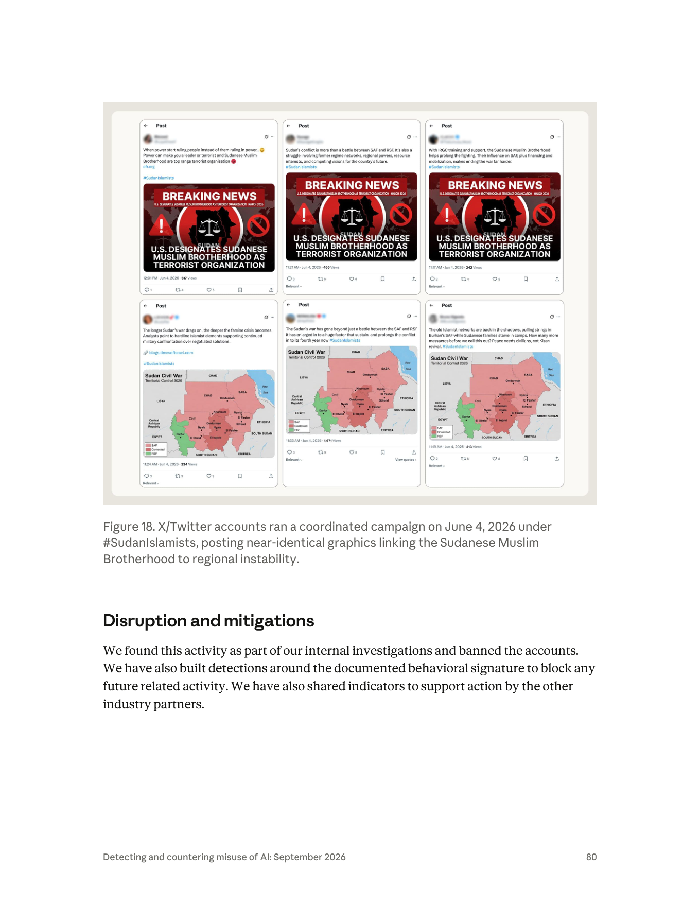

課程模組：02 影響力行動（Influence operations）｜一手來源：Anthropic《Detecting and countering misuse of AI: September 2026》PDF p.78–80（p.78 下半起為本案，p.81 起轉入監控章節）｜整理日期：2026-09-13
原文標題：GTG-84002: Disrupting a UAE-directed influence operation targeting the Muslim Brotherhood, Sudan conflict, and UN accountability mechanisms
一個人、一個帳號、五條並行戰線。 報告明確寫「an account used by a single actor」。這個單一行為者同時經營：約 300 個假影響者社群帳號、一個冒用真實瑞士組織身分的門面 NGO、為聯合國人權理事會第 62 屆會期代筆的兩份證詞、18 名歐洲議會議員與知名記者的個人檔案、以及針對批評阿聯的聯合國特別報告員的「反問責檔案」（counter-accountability dossiers）。過去這種規模需要一間有編制的情報公司（見 §9 的 Abu Dhabi Secrets 對照）。
AI 不是寫手，是常設的作戰參謀部。 行為者在自建私有平台上維持一個名為 "Deadshot" 的 AI 人格，系統設定內嵌一份 master doctrine file（主教義檔），讓 Claude 在數百個工作階段重複同一個任務指令：「a coordinated transatlantic and regional operation to dismantle the Muslim Brotherhood globally」。這是「持久記憶檔取代逐次提示」的典型案例（報告 p.43 趨勢段落）。
歸因是本報告影響力章節中最強的措辭之一：high confidence，且指向政府官員個人。 原文：「our investigation linked it with high confidence to UAE government officials」。同時「The doctrine file also named senior UAE officials as the intended recipients of the work」。注意：被歸因的對象是「政府官員」，不是「阿聯政府」這個法人——這個區別在情報寫作上是刻意的（§2.4）。
本案最重要的發現：影響力行動已經滲透到國際人權機制「內部」。 不是在推特上吵，而是（a）代筆讓兩名「獨立在地證人」在人權理事會發言、（b）對批評本國的聯合國特別報告員建立反制檔案、（c）冒用真實人權組織的身分去發表「國家撰稿」的人權報告。這三件事合起來，攻擊的是國際問責機制賴以運作的「證言可信度」本身。
Breakout Scale 評為 Category Three，但這個分數可能低估了本案。 Anthropic 的理由是「活動跨多個社群平台」，而更高級別需要「broad public attention or policy impact」的證據，而他們無法確認。問題在於：Breakout Scale 測的是公眾觸及，本案真正的威脅路徑是機構滲透——一份被唸出來的證詞，在聲量上可能是零，在制度效果上卻遠大於一萬則推文（§2.6、§10.1）。
報告自身存在一處內部不一致，必須在課堂上點出。 案例本文（p.78）說「We cannot confirm whether any of the testimonies or compiled target dossiers successfully reached their intended audiences」；但同一份報告的章節趨勢摘要（p.43）與 Anthropic 官網摘要頁卻寫「ghost-written testimony delivered in a live UN Human Rights Council session」。摘要層比案例層講得更肯定。這是 CTI 寫作中最常見也最危險的失真（§8.4、§12.2）。
Figure 18 是一張「AI 時代協同行為」的教科書級截圖。 六個 X 帳號在 2026-06-04 上午 11:17 到中午 12:01 之間（44 分鐘主爆發窗）以 #SudanIslamists 發布兩組近乎相同的圖像，文案各自改寫、圖像完全一致，互動量極低（213–1,671 views）。其中的「蘇丹內戰控制圖」在地理上明顯錯亂（CHAD 標在蘇丹境內、EGYPT 標在中非位置、出現不存在的「SABA」、Nyala 與 Omdurman 各出現兩次）——這是合成圖像的直接證據（§6.1）。
這個案例在課程裡要教什麼： 當「影響力行動的委託方是民主國家的安全夥伴」時，揭露、歸因與問責會遇到什麼樣的政治阻力；以及當 AI 讓「情報公司等級的檔案戰」降到單人成本時，國際組織、國會與 NGO 的「文件可信度」要如何重新驗證。
| 項目 | 報告原文 / 事實 | 頁碼 |
|---|---|---|
| 規模 | 「an account used by a single actor」——單一行為者、單一帳號 | p.78 |
| 工具形態 | 「maintain an AI persona named "Deadshot" hosted on their own private platform」 | p.78 |
| 持久化機制 | 「Embedded inside the system's setup was a master doctrine file that instructed Claude to repeat the same mission across hundreds of sessions」 | p.78 |
| 任務宣言（逐字） | 「a coordinated transatlantic and regional operation to dismantle the Muslim Brotherhood globally」 | p.78 |
| 組織形態 | 「The operation was split across five closely connected lines of activity. The actor managed each stream simultaneously」 | p.78 |
| 同步性 | 「ensuring that narrative generation, technical obfuscation, and tactical target selection were completely synchronized across the entire campaign」 | p.78 |
| 反追蹤設計 | 「the operation was built so that it could not be traced back to the actors」 | p.78 |
| 歸因 | 「our investigation linked it with high confidence to UAE government officials」 | p.78 |
| 交付對象 | 「The doctrine file also named senior UAE officials as the intended recipients of the work」 | p.78 |
| 金流 | 「According to our findings, the actor also funded the social media network that amplified the content」 | p.78 |
| 自覺的掩護策略 | 「Internal reporting called the network's "independence" its "greatest strategic asset," thus admitting it was attempting to hide its state-directed nature」 | p.79 |
偵測工程的推理練習：一份把行為者寫成「無法被追溯」、卻同時宣稱「high confidence 連到政府官員」的報告，其證據幾乎必然來自平台側（帳號註冊/計費/驗證資訊、跨帳號的裝置或網路指紋、教義檔與交付文件中的自我揭露）。外部研究者永遠看不到這些。這正是 §9 要討論的「單一來源情報」問題。
多家媒體（含 Cryptobriefing、Semafor 的轉述、多家聚合站）寫成「the operation was run by a single actor the report identifies as "Deadshot"」，把 Deadshot 當成人的代號。
PDF 原文寫的是：「The actor leveraged Claude to maintain an AI persona named "Deadshot" hosted on their own private platform.」
Deadshot 是行為者在自家平台上維持的 AI 人格（AI persona），不是行為者本人的化名。 這個差別不是雞蛋裡挑骨頭：
課程上這是 §10.1 的核心示範：二手報導的一個名詞誤植，會把偵測假設整個引到錯誤的方向。（Deadshot 本身是 DC 漫畫中的雇傭殺手角色名，行為者顯然是刻意選的自我形象；報告未對此命名做任何評論。）
「信度（confidence）」在情報寫作中是分析者對自己判斷所依據之證據與推理的把握程度，而不是「這件事發生的機率」。這兩者在美國情報體系的《ICD 203 Analytic Standards》中被明確要求分開表述：
常見錯誤：把「high confidence」讀成「幾乎確定是真的」。正確讀法是「我們的來源與推理很紮實，足以支撐這個判斷」——它仍然可能是錯的，而且情報史上高信度誤判的例子不少。
| 級別 | 典型門檻 | 對應的寫法 |
|---|---|---|
| Low confidence | 單一來源、片段證據、資訊可信度存疑、替代解釋仍然開放且合理 | 「we assess with low confidence…」「possibly」「may」 |
| Moderate / Medium confidence | 來源可信但佐證不完整；部分替代解釋已被排除，但未全部排除；推理鏈有一到兩處靠推論而非直接證據 | 「we assess with medium confidence…」「likely」 |
| High confidence | 多條相互獨立的證據線收斂到同一結論；來源可靠性高；主要替代假設已被具體檢驗並排除；推理鏈無關鍵斷點 | 「we assess with high confidence…」「we link with high confidence…」 |
另一套常在 CTI 中並用的是 NATO Admiralty Code（來源可靠度 A–F × 資訊可信度 1–6），它把「來源本身可不可靠」與「這條資訊本身可不可信」拆成兩個獨立維度。在平台側情報（像 Anthropic 這種）中，來源可靠度通常很高（自家日誌），但跨出平台之後的事實（貼文是否真的發出、證詞是否真的被唸出）可信度會急遽下降。這正是本案 p.78 最後一句的由來。
| 案例 | 措辭（原文） | 頁碼 | 讀法 |
|---|---|---|---|
| GTG-14010（中國，監控維族） | 「We assess with low confidence that the actor was a contractor working on behalf of PRC state security rather than a state security organ acting directly」 | p.86 | 「是承包商還是機關本身」這一層不確定；但「與 PRC 國安優先事項一致」是另一句較強的陳述 |
| GTG-14021（中國，公安/國安） | 「We assess with medium confidence that this operation was the work of a contractor working for clients in the government」＋「We also assess with high confidence that two linked clusters of accounts were associated with the same actor」 | p.~96 | 同一段裡兩種信度：技術性關聯（同一行為者）高、組織歸屬（承包商 vs 機關）中 |
| GTG-24015（俄國國營媒體） | 「we assess with high confidence that the actors ultimately shared the outputs with Russian state-owned and state-funded media」 | p.58 | 有下游可觀測證據（Sputnik/RIA/RT 上出現逐字吻合的內容，見該案 Figure 9–11） |
| GTG-84002（本案） | 「our investigation linked it with high confidence to UAE government officials」 | p.78 | 最強的措辭，但沒有公開任何下游可觀測證據 |
| GTG-54004（肯亞） | 「we believe this was a local Kenyan political astroturfing campaign… though we have not identified the exact organization responsible」 | p.76 | 連信度詞都不用，直接用 believe + 明說未識別 |
| GTG-84006（MEK/NCRI） | 「While the presence of committee approval loops and notes about MEK leadership suggest central tasking is likely, we are not able to verify the level of centralized control」 | p.71 | likely（機率語言）＋ 明示未能查證的邊界 |
課堂重點：同一份報告、同一個團隊，對不同案例用了四種不同強度的措辭。這不是文筆問題，是分析紀律。讀報告時應該先做的一件事，就是把所有歸因句抓出來排成上面這張表——措辭的落差本身就是情報。
把 p.78 的三句話拆開，可以還原 Anthropic 的推理結構：
flowchart TD
A["行為者"]
B["產出物<br/>「用 Claude 產生情報簡報、身分複製報告、代筆證詞、目標側寫清單」"]
C["阿聯高層官員"]
D["阿聯政府官員"]
A -->|"(1) 平台日誌直接證據（最強）"| B
B -->|"(2) 教義檔內部自述（中等）"| C
A <-->|"(3) 歸因聲明：證據未揭露（不可外部檢證）"| D
N2["「The doctrine file also named senior UAE officials as the intended recipients of the work.」<br/>↑ 這是行為者「自己說」要交給誰，不等於對方真的收到或真的下令"]
N3["「our investigation linked it with high confidence to UAE government officials」"]
C -.- N2
D -.- N3
教學問法： 如果你是被指控方的法務，你會攻擊這條鏈的哪一環？如果你是 Anthropic 的分析師，你為什麼選擇不公開第 (3) 步？（答案的兩面：保護偵測方法與帳號隱私 vs 讓外界無法檢證，削弱指控的公共可信度。）
報告寫的是官員（officials），不是政府（the government）/ 國家（the state）。這在歸因語言學上是一個層級的差異：
| 歸因對象 | 意涵 | 政治後果 |
|---|---|---|
| 個別官員（本案用語） | 有政府身分的人涉入；不主張這是經正式決策程序的國家行為 | 被指控國可切割為「個人行為」；不必然觸發國家責任 |
| 政府機關 / 特定部會 | 制度化的行為 | 較難切割 |
| 國家（state-sponsored / state-directed） | 國際法上的國家行為歸屬 | 可能觸發外交後果、制裁討論 |
注意標題卻寫 "UAE-directed"（阿聯指揮的）——標題的措辭比內文的歸因句更強。這種「標題強於內文」的落差在威脅情報產品中很常見（標題要傳播，內文要站得住），但對讀者而言是必須自覺校正的偏誤來源。
"Using the Breakout Scale, we would assess this activity as Category Three, with the activity running across several social media platforms. A higher category would require evidence of broad public attention or policy impact, which we are not able to confirm."
由 Ben Nimmo 在 2020 年 9 月發表於 Brookings 的《The Breakout Scale: Measuring the impact of influence operations》，是目前產業界最通用的影響力行動衝擊量表。Anthropic 在報告 p.42 自述：
"we apply the Breakout Scale, a six-category framework widely accepted by industry researchers. The scale categorizes impact based on cross-platform migration and reach. Category One represents content that is confined to a single community on a single platform, while Categories Two through Six measure increasingly higher levels of public exposure and distribution."
六個級別（依 Nimmo 原始定義）：
| 級別 | 判準 |
|---|---|
| One | 單一平台、單一社群內，未外溢 |
| Two | 單一平台跨多社群，或 單一社群跨多平台 |
| Three | 跨多個平台且觸及多個社群 |
| Four | 突破社群媒體，被主流媒體放大 |
| Five | 被高知名度個人（名人、政治人物、候選人）放大 |
| Six | 引發政策回應或具體行動，或內含暴力號召 |
Breakout Scale 的座標軸是「內容跑到多遠、多少人看到」。它在設計上假設影響力行動的傷害函數與公眾觸及度單調相關。這個假設在「操縱選舉輿論」類行動上成立，在本案不成立：
| 行動線 | 公眾觸及度 | 制度衝擊潛力 |
|---|---|---|
300 個假帳號發 #SudanIslamists |
低（單則 213–1,671 views） | 低 |
| 冒用真實人權組織發表「國家撰稿」的人權報告 | 低—中 | 高（進入國際文獻紀錄） |
| 代筆兩份 HRC62 證詞，且刻意不提阿聯 | 幾乎為零（會場口頭發言） | 極高（進入聯合國正式紀錄，被引用、被存檔） |
| 18 名歐洲議會議員個人檔案 | 零（不公開） | 高（立法者定向施壓的前置作業） |
| 特別報告員反問責檔案 | 零（不公開） | 高（針對機制守門人的削弱） |
一份在人權理事會被唸出來的三分鐘證詞，其 views 數是 0，但它會被寫進會議紀錄、被 NGO 引用、被學術文獻引用、被下一份決議草案的起草者參考——這是 Breakout Scale 量不到的傳播管道。
課堂上可以據此提出一個真正有價值的設計題：如果要為「機構滲透型」影響力行動設計一個補充量表，你的級距會怎麼定？（建議軸向：是否進入正式紀錄 → 是否被機制的產出物引用 → 是否改變議程 → 是否改變決議文字。見 §10.3 演練 E。）
同時必須公允地說：Anthropic 選擇 Three 是保守且可辯護的——因為 Four 以上需要「證據」，而他們明確承認拿不到。在情報寫作中，寧可低估也不要在無證據處喊高分，這是紀律，不是怯懦。
理解 #SudanIslamists 行動，必須先理解三層背景。以下各項均附外部來源，且明確區分「已確立的事實」與「有爭議的指控」。
衝突基本事實：
- 2023-04 起，蘇丹武裝部隊（SAF，Burhan 領導）與快速支援部隊（RSF，Hemedti 領導）爆發全面內戰；至 2026 年造成超過 20 萬人死亡、數百萬人流離失所（AFP 統計），為當前全球最嚴重人道危機之一。
- 2025-10-26，RSF 在圍城 18 個月後攻下北達佛首府 El Fasher。
- 2026-02，聯合國蘇丹獨立國際實況調查團（Independent International Fact-Finding Mission for the Sudan） 認定 RSF 在 El Fasher 犯下三項種族滅絕的構成行為（殺害受保護族群成員、造成嚴重身心傷害、蓄意施加旨在毀滅該群體之生存條件），針對 Zaghawa 與 Fur 等非阿拉伯社群，並稱具有「hallmarks of genocide」。（來源：OHCHR 新聞稿、UN News，2026-02）
針對阿聯的指控（第三方調查，非本報告主張）：
- 聯合國蘇丹專家小組（Panel of Experts）曾指出存在關於阿聯向 RSF 大規模轉移武器與軍用物資的「可信指控（credible allegations）」，並追蹤 2023-06 至 2024-05 間自阿布達比飛往查德 Amdjarass 機場的軍事貨運航班。
- Amnesty International 調查指阿聯將中國製武器轉運至 RSF，違反聯合國對達佛的武器禁運。
- Human Rights Watch 於 2026-05-25 發布報告《From Bogotá to El Fasher》，指至少 300 名哥倫比亞籍私人軍事承包商經阿聯設施轉運、與 RSF 並肩作戰（含 2025-10 攻佔 El Fasher 期間），並指保加利亞製迫擊砲彈自阿聯軍方庫存流入 RSF、中國製翼龍 2 無人機自查德 Amdjarass 機場起飛。
阿聯的立場（必須同等呈現）：
- 阿聯一貫且明確否認向蘇丹任一交戰方提供任何形式的支持。對 HRW 報告的回應為：「We categorically reject any claims of providing any form」of support to warring parties，並主張自身支持停火努力。
- 阿聯在人權理事會場合反覆行使答辯權（Right of Reply）。例如 2026-02-26 第 61 屆會期，阿聯常駐日內瓦代表團參事 Khalifa Al Mazrouei 指蘇丹武裝部隊的指控「baseless and false」，並反指 SAF「systematically avoided accountability for its links to extremist groups, particularly those associated with the Muslim Brotherhood」。（來源：Gulf News，2026-02-27）
- 2025-05-05，國際法院（ICJ）以 14 比 2 裁定對「蘇丹訴阿聯」種族滅絕公約案缺乏管轄權並終結該案——理由是阿聯在 2005 年加入《種族滅絕公約》時對第九條（爭端解決條款）作出保留。此裁定是程序／管轄權裁定，並非對指控實體真偽的裁判。 課堂上務必強調這個區別，因為雙方都曾在宣傳中曲解它。
SAF 一側的伊斯蘭主義爭議（這是 #SudanIslamists 主打的內容）：
- 蘇丹伊斯蘭運動（Sudanese Islamic Movement）源自 1950 年代，經 Hassan al-Turabi 整合為國家伊斯蘭陣線（NIF），1989 年政變後成為 Bashir 政權（1989–2019）的意識形態核心；「Kizan（كيزان）」是蘇丹民間對該政權伊斯蘭主義既得利益者的貶稱。
- 2023 年戰爭爆發後，SAF 吸納了包括 al-Baraa bin Malik Brigade（al-Baraa ibn Malik 旅） 在內的伊斯蘭主義民兵以補充兵力。
- 2026-03-09，美國國務院宣布將「蘇丹穆斯林兄弟會」（含蘇丹伊斯蘭運動及其武裝側翼 al-Baraa ibn Malik 旅）指定為 Specially Designated Global Terrorist（SDGT），並表明將指定為 Foreign Terrorist Organization（FTO），於 2026-03-16 生效／刊登聯邦公報。 國務院理由包括：向戰爭投入超過 2 萬名戰鬥人員、接受伊朗伊斯蘭革命衛隊（IRGC）訓練與支持、在占領區進行「mass executions of civilians」與依族裔／政治歸屬進行即決處決。
- 阿聯外交部公開歡迎該指定，稱其為「a key measure」以剝奪該組織「of the resources that enable it to engage in, support, or justify acts of extremism」。（來源：Gulf News，2026-03-09）
- 更早的背景：川普總統於 2025-11-24 簽署 Executive Order 14362，啟動對特定穆兄會分支的 FTO/SDGT 指定程序；2026-01 美國指定埃及、約旦、黎巴嫩分支為 SDGT（黎巴嫩 al-Jamaa al-Islamiya 另列 FTO）。
把上述時間軸疊起來：
2025-11-24 EO 14362 啟動穆兄會分支指定程序
2026-01 美國指定埃及／約旦／黎巴嫩分支
2026-02-19 聯合國調查團認定 RSF 在 El Fasher 犯下種族滅絕構成行為（壓力落在 RSF ＝ 阿聯被指控支持的一方）
2026-02-26 阿聯在 HRC61 行使答辯權，反指 SAF 與穆兄會連結
2026-03-09 美國指定「蘇丹穆斯林兄弟會」為 SDGT／擬列 FTO；阿聯公開歡迎
2026-05-25 HRW 發布《From Bogotá to El Fasher》，直指阿聯角色
2026-06-04 ← Figure 18：300 帳號網絡以 #SudanIslamists 協同發文（本案）
2026-06-15 HRC62 開議（至 2026-07-08），蘇丹實況調查團於首日提出口頭更新
關鍵觀察：#SudanIslamists 行動並沒有捏造事實。 圖卡上的「U.S. DESIGNATES SUDANESE MUSLIM BROTHERHOOD AS TERRORIST ORGANIZATION — MARCH 2026」是真的。這個行動做的是三件事：
這是影響力行動研究中最重要、也最常被誤解的一點：現代高階資訊行動的主力不是「假新聞」，而是「真事實 + 假草根 + 假身分」。 偵測時如果只做事實查核（fact-checking），這個行動每一條都會通過。要抓到它，必須做行為分析（behavioral analysis）——誰在同一分鐘、用同一張圖、說同一件事。
| # | 行動線（PDF 原文） | 具體數字 | 目標性質 |
|---|---|---|---|
| 1 | "They built and managed a network of approximately 300 inauthentic influencer social media accounts." | ~300 個帳號 | 公眾輿論場 |
| 2 | "They created a front NGO that copied a real Swiss organization's identity and published state-authored human-rights reports under it." | 1 個門面 NGO | 公民社會／文獻紀錄 |
| 3 | "They ghost-wrote official testimonies with the goal of having them delivered by two people at the 62nd session of the UN Human Rights Council. The content was engineered with specific restrictions ensuring that neither speech mentioned the UAE." | 2 份證詞、2 名發言人 | 聯合國正式程序 |
| 4 | "They thoroughly researched and profiled 18 members of the European Parliament and prominent journalists. They built out detailed personal files on these lawmakers and reporters." | 18 名歐洲議會議員 ＋ 未指定數量的記者 | 民主國家立法者、媒體 |
| 5 | "They compiled counter-accountability dossiers on UN Special Rapporteurs who had criticized the conduct of the UAE in Sudan." | 未指定人數 | 國際人權機制的獨立專家 |
同一份報告的兩頁，一處說瑞士組織、一處說蘇丹人權組織。 可能的解釋有三：
1. 是同一個組織——許多蘇丹（及其他國家）人權組織為了參與人權理事會而在日內瓦註冊，因此同時是「瑞士註冊的組織」與「蘇丹人權組織」。這是最可能的解釋。
2. 是兩個不同的冒用對象（瑞士組織的法人身分 ＋ 蘇丹組織的在地正當性），分別用於不同用途。
3. 純粹是編輯疏失。
報告沒有澄清。課堂上應以第 1 解釋為工作假設，但明確標示這是推論。（§12 列為未能驗證項。）
為什麼「日內瓦註冊」這件事在戰術上如此關鍵： 人權理事會的 NGO 參與（口頭發言、書面陳述、周邊會議）以 ECOSOC 諮商地位 為門檻，而實務上在日內瓦有據點、有人力、熟悉議程的組織才能穩定行使這些權利。冒用一個既有的、有正當性的組織身分，等於直接繼承它的通行證與信譽，跳過數年累積。
（遊說與情報活動的界線、歐盟的防範機制，見 §3.3 專節。）
特別報告員機制是什麼（為什麼攻擊它特別嚴重）：
| 特性 | 內容 | 對攻擊者的意義 |
|---|---|---|
| 數量 | 截至 2026-08，共 44 個主題類 ＋ 12 個國家類 授權（OHCHR） | 目標集合小且明確 |
| 身分 | 由人權理事會任命的獨立專家，以個人身分任職 | 攻擊個人＝攻擊機制 |
| 報酬 | 無給職（unpaid） | 無機構薪資保護，經濟與法律上更脆弱 |
| 任期 | 最長 6 年 | 有明確的可等待期限 |
| 權力 | 沒有任何強制執行力。工具為：致函各國的通訊（allegation letters／urgent appeals）、新聞稿、國別訪問、向 HRC／聯大提交主題報告 | 他們唯一的力量是可信度（credibility） |
所以攻擊路徑在邏輯上是嚴密的： 你無法制裁一個特別報告員，無法免他的職（他不是你的雇員），無法起訴他（有功能性豁免）。你唯一能做的就是摧毀他的可信度——質疑其中立性、蒐集其個人關聯、準備「他自己也有問題」的材料。這正是「counter-accountability dossier」這個詞的字面意思：反問責——用檔案對付問責。
這一節是本案在課程中最具政策實用性的部分。
外國政府（包括民主國家之間）在他國立法機關進行的下列活動，在絕大多數法域都是合法的：
課堂上必須先講清楚這一點，否則學生會誤以為「外國政府關注我國國會」本身就是攻擊。它不是。
判斷一項活動是「遊說」還是「情報／影響力行動」，看四件事：
| 判準 | 遊說（合法） | 影響力行動（本案） |
|---|---|---|
| ① 出資方揭露（disclosure） | 對方知道你代表誰 | 隱藏。報告：網絡的「independence」被內部稱為「greatest strategic asset」 |
| ② 身分真實性（authenticity） | 用自己的真實身分 | 冒用真實瑞士／蘇丹組織身分；300 個假影響者帳號；代筆他人證詞 |
| ③ 資訊範圍（scope） | 職務相關的公開資訊 | 「detailed personal files」；範圍未揭露 |
| ④ 用途（purpose） | 說服 | 配合假草根網絡、假 NGO、假證詞的整體欺騙架構 |
本案在四個判準上全部越線。 其中 ① 是最根本的：民主國家的遊說管制制度（美國 FARA、歐盟透明度登記、各國遊說法）核心邏輯不是「禁止外國影響」，而是「外國影響必須可見」。當可見性被刻意摧毀，決策者就失去了對資訊來源加權的能力。
（a）INGE 與 ING2 特別委員會
（b）Qatargate 的制度後果（本案的現實對照組）
（c）第三國利益代表透明度指令（研議中）
歐盟「防衛民主一攬子方案（Defence of Democracy package，2023-12 提出）」中的核心立法：
（d）對本案的殘酷現實檢驗
即使該指令生效，它能否防住 GTG-84002？
Attack lifecycle and AI usage
"The operational workflow took real-world topics and their own pre-made political doctrine files, and then used Claude to turn the whole thing into official-looking intelligence briefs, cloned identity reports, ghost-written testimony, and individually profiled targeting lists, several prepared for direct delivery to senior UAE officials."
這是整份報告中最短的 Attack lifecycle 段落之一（只有一句話）。但配合 p.78 的敘述，可以還原出完整的六階段結構。
| 項目 | 內容 |
|---|---|
| 人類做什麼 | 撰寫 master doctrine file，嵌入自建私有平台的系統設定（system's setup）；定義 AI 人格「Deadshot」；設定任務宣言「a coordinated transatlantic and regional operation to dismantle the Muslim Brotherhood globally」；設定禁則（例如「證詞不得提及 UAE」）；指定產出物的收件人（senior UAE officials） |
| Claude 做什麼 | 無（此階段 Claude 尚未介入；教義是人類離線完成的） |
| 自主程度 | 不適用（人類設計階段） |
| 關鍵觀察 | 報告 p.43 的趨勢句可直接套用本案：「Markdown files containing doctrine were reused almost verbatim across hundreds of sessions」與「Increasingly, operations are not run using individual prompts. Instead, a great deal is embedded within persistent memory files」 |
偵測工程重點：當意圖被移進系統提示／記憶檔，單次對話的內容就會顯得無害。使用者可能只是說「幫我把這份資料整理成簡報」，而所有的政治定向都藏在他看不見（但模型看得見）的教義檔裡。這是內容分類器（content classifier）最難處理的形態——分類器看的是一則訊息，威脅存在於一個會期序列（session series）之中。
| 項目 | 內容 |
|---|---|
| 人類做什麼 | 挑選真實世界的事件與議題（美國對蘇丹穆兄會的恐怖組織指定、El Fasher 局勢、飢荒、IRGC 與 SAF 的關聯、人權理事會議程） |
| Claude 做什麼 | 接收並處理這些素材 |
| 自主程度 | 人類逐步指揮（human-in-the-loop, step-directed） |
| 關鍵觀察 | 輸入是真的。 這決定了整個行動的偵測難度——見 §2.7.4。Figure 18 中的貼文引用了 cfr.org 與 blogs.timesofisrael.com，都是真實存在的來源（前者是美國外交關係協會，後者是 Times of Israel 的使用者部落格平台）。用一個高權威機構與一個低門檻的投稿平台混搭，是典型的來源洗白（source laundering） |
報告列出四類產出物。對照 p.78 的五條行動線：
| 產出物類型（p.79 原文） | 對應行動線 | Claude 的具體工作 | 自主程度 |
|---|---|---|---|
| official-looking intelligence briefs | 交付高層官員 | 把公開素材轉為「看起來像官方情報產品」的簡報格式 | 對話式協助 → 批次化 |
| cloned identity reports | 門面 NGO | 以被冒用組織的口吻、格式、風格撰寫人權報告 | 人類逐步指揮（需提供被冒用組織的文風樣本） |
| ghost-written testimony | HRC62 證詞 | 撰寫兩份完整的口頭證詞，並套用「不得提及 UAE」的硬性限制 | 人類逐步指揮（限制條件由人類設定） |
| individually profiled targeting lists | 18 名 MEP ＋ 記者 ＋ 特別報告員 | 研究、彙整、結構化為「個人檔案」 | 對話式協助 → 可能批次化 |
另加社群內容生產（p.78 行動線 1）：300 個影響者帳號的貼文文案。Figure 18 顯示同一則訊息被改寫成六種不同語氣（正式分析型、情緒抒發型、政策論述型、人道關懷型、口語破碎型）——這正是報告在 GTG-54004（肯亞案）中描述的模式：「used Claude to humanize and refine batches of ... tweets, showing that the model's main value to the network was volume and the appearance of authenticity」（p.76）。
注意 Figure 18 第 5 則貼文的文法錯誤：「it has enlarged in to a huge factor that sustain and prolongs the conflict in to its fourth year now」——
in to應為into、sustain應為sustains、有雙空格。第 1 則也有破碎語法：「When power start ruling people instead of them ruling in power…」。這些錯誤很可能是刻意的。 報告 p.43 明白寫道：actors「asked the model to strip the marks of automated text and to sound organic」。完美的英文在一個宣稱來自蘇丹／非洲在地觀察者的帳號上，反而是異常訊號。「AI 產生的文本有語法錯誤」在 2026 年已經不能再當作「這不是 AI 寫的」的證據——反過來，過度一致的完美文法才是。
| 項目 | 內容 |
|---|---|
| 人類做什麼 | 註冊／購買約 300 個社群帳號（其中至少一個有付費驗證藍勾）；建立門面 NGO 的對外身分；自建託管 Deadshot 的私有平台；出資支付放大費用 |
| Claude 做什麼 | 報告未明說 Claude 是否參與帳號人設設計。但 p.43 趨勢段落指出，同期其他行動使用 Claude「built account warmup and evasion logic」、「generated full personas by using AI-generated profile photos, invented biographies」 |
| 自主程度 | 未知 |
| 關鍵缺口 | 本案的「技術混淆（technical obfuscation）」細節完全未揭露，儘管 p.78 明說行動有這條線且與其他兩線「completely synchronized」 |
| 項目 | 內容 |
|---|---|
| 人類做什麼 | 決定投放時機（2026-06-04）、統一主題標籤（#SudanIslamists）、分配圖像與文案、跨平台佈署（報告：「several social media platforms」） |
| Claude 做什麼 | 產生差異化文案；報告未說明是否由 Claude 排程 |
| 自主程度 | 人類逐步指揮（本案沒有證據顯示 AI 自主編排多代理執行——與 GTG-84006（「Viktor」共享代理平台、具長期記憶、可在無人逐次指揮下持續產出）形成鮮明對比） |
| 協同特徵 | 六則貼文集中在 11:17–11:33（16 分鐘內五則）＋12:01 一則；兩組完全相同的圖像；同一標籤 |
| 項目 | 內容 |
|---|---|
| 人類做什麼 | 將成品交付給 doctrine file 中指名的阿聯高層官員（「several prepared for direct delivery to senior UAE officials」） |
| Claude 做什麼 | 產出「official-looking」格式——格式本身就是交付價值的一部分：一份看起來像政府情報產品的文件，在官僚體系內的說服力遠高於一份聊天記錄 |
| 自主程度 | 人類執行 |
| 關鍵限制 | 「We cannot confirm whether any of the testimonies or compiled target dossiers successfully reached their intended audiences.」（p.78） |
對話式協助 人類逐步指揮 AI 編排多代理自主執行
（chat assist） （human step-directed） （agentic orchestration）
| | |
| ★ GTG-84002 在這裡 GTG-84006（Viktor 平台）
| （但帶有一個關鍵變體） GTG-10007（自主利用管線，p.24）
GTG-84002 的關鍵變體：它是「人類逐步指揮」，但指揮的內容被寫進了教義檔。
這造成一種混合形態：
這個形態在偵測上最麻煩，因為：
課堂問題：你會用什麼訊號偵測這種形態？（提示方向：系統提示的跨會期重複度、同一組織／個人名單在不同會期反覆出現、產出物格式的高度模板化、產出物的「收件人」欄位、「不得提及 X」這類否定型限制的頻率。）
MITRE ATT&CK 是為網路入侵設計的。它的戰術軸（Reconnaissance → Resource Development → Initial Access → … → Impact）預設攻擊者要進入一個技術系統。影響力行動不入侵系統，它入侵的是資訊環境與制度程序。
因此本節採取雙框架：
- ATT&CK：只對應真正吻合的技術（主要在 PRE 階段的 Reconnaissance / Resource Development）。吻合不到的，明確標示為框架缺口。
- DISARM（Disinformation Analysis and Risk Management，前身 AMITT）：專為影響力行動設計的對應框架。
DISARM 編號的重要警告：DISARM 在不同版本間曾重編技術編號。例如「冒用既有組織身分」一項，在不同版本／不同資料庫中分別出現為
T0099（舊稱 Prepare Assets Impersonating Legitimate Entities）、T0143.003、以及 MISP galaxy 中的T0038.002。教學與報告時請以官方 DISARM 當期版本為準，並註明版本號。 下表以技術名稱為主、編號為輔。
| 戰術 | 技術 ID | 技術名稱 | 本案的具體作法 | 偵測構想 |
|---|---|---|---|---|
| Reconnaissance | T1589 | Gather Victim Identity Information | 對 18 名 MEP、知名記者、聯合國特別報告員建立「detailed personal files」 | 監測針對同一組具名公眾人物的高頻、結構化查詢；對「公職人員姓名 + 個人生活關鍵詞」的組合查詢建立偵測 |
| Reconnaissance | T1591 | Gather Victim Org Information | 研究被冒用的瑞士／蘇丹人權組織的組織結構、出版品格式、對外身分 | 偵測「某組織的完整識別資產（logo 描述、文風、報告格式、註冊資訊）在單一會期內被整組請求」 |
| Reconnaissance | T1593 | Search Open Websites/Domains | 以公開來源（cfr.org、媒體部落格、聯合國文件）建構敘事素材 | 低價值（此行為與合法研究無法區分） |
| Resource Development | T1585.001 | Establish Accounts: Social Media Accounts | 建立／經營約 300 個假影響者帳號 | 註冊時間叢集、頭像來源、貼文時序相關性、跨帳號的文案模板相似度 |
| Resource Development | T1583 | Acquire Infrastructure | 自建託管 Deadshot AI 人格的私有平台 | 平台側可見；外部不可見 |
| Resource Development | T1608 | Stage Capabilities | 預置教義檔、模板、限制條件於系統設定中 | 偵測系統提示的跨會期指紋（見 §5.4） |
| Defense Evasion | T1656 | Impersonation | 冒用真實 NGO 身分；為他人代筆使其看似獨立證人 | 文件層級的來源驗證（見 §10.3 演練 C） |
| DISARM 階段（概念） | 技術名稱（編號見上方警告） | 本案作法 | 偵測構想 |
|---|---|---|---|
| Plan Strategy | — | master doctrine file：「dismantle the Muslim Brotherhood globally」 | 平台側：偵測跨數百會期重複出現的同一份政治教義文本 |
| Plan Objectives | — | 五條並行行動線，含明確交付對象（senior UAE officials） | 偵測產出物中反覆出現的「收件人／呈閱對象」欄位 |
| Target Audience Analysis | Segment Audiences；Identify Social and Technical Vulnerabilities | 18 名 MEP＋記者＋特別報告員的個人檔案；依批評紀錄篩選特別報告員 | 對「依據某人是否批評過 X 來建立名單」的查詢模式建立偵測 |
| Develop Narratives | Amplify Existing Narrative | 放大真實的美國恐怖組織指定；把 SAF 一側的伊斯蘭主義者框定為延長戰爭的主因 | 事實查核在此完全失效；只能靠協同性偵測 |
| Develop Content | Develop Text-Based Content；Develop Image-Based Content | 六種語氣的文案改寫；兩組統一圖卡（BREAKING NEWS 卡、Sudan Civil War 控制圖） | 圖像雜湊比對（近乎相同圖像跨帳號重複）；合成圖像的內在矛盾（見 §6.1.5） |
| Develop Content | Create Fake Research | 「state-authored human-rights reports」掛在被冒用的 NGO 名下 | 文件溯源驗證；與被冒用組織的正式出版清單比對 |
| Establish Assets | Create Inauthentic Social Media Pages and Groups；Create Anonymous Accounts | ~300 個假影響者帳號 | 註冊叢集、行為同步性、付費驗證的異常分布 |
| Establish Assets | Impersonate Existing Organisation | 冒用真實瑞士／蘇丹人權組織身分建立門面 NGO | 域名／註冊資訊／聯絡管道交叉驗證 |
| Establish Assets | Create Fake Experts | 代筆證詞使兩名發言人成為「獨立在地證人」 | 發言人過往紀錄、與掛名組織的實際隸屬關係查核 |
| Microtarget | — | 針對特定 18 名立法者與特定特別報告員 | 立法機關／國際組織側的「被異常關注」告警機制 |
| Select Channels | — | 跨多個社群平台；聯合國口頭發言管道；歐洲議會；官僚呈閱管道 | — |
| Conduct Pump Priming | Create Hashtags and Search Artefacts；Flood Existing Hashtag | #SudanIslamists 統一標籤 |
標籤的首次出現時間 vs 使用爆量時間；參與帳號的重疊度 |
| Deliver Content | Post Across Groups | 2026-06-04 的 44 分鐘協同爆發 | 時序聚類 + 圖像雜湊 + 文本語意相似度的三重比對 |
| Persist / Conceal | Conceal Sponsorship | 內部把網絡的「independence」稱為「greatest strategic asset」；證詞刻意不提 UAE | 偵測「應出現而未出現」的實體名稱（negative-space detection） |
| Assess Effectiveness | — | 報告未提及行為者是否有成效評估機制 | — |
以下五項行為，在 ATT&CK 與 DISARM 中都沒有乾淨的對應，是 AI 時代新出現的攻擊面：
| # | 行為 | 為什麼現有框架接不住 | 建議的新技術描述 |
|---|---|---|---|
| G1 | 教義檔持久化（Doctrine persistence in system prompt / memory files） | ATT&CK 的 T1608 Stage Capabilities 指的是「預先部署惡意工具到基礎設施」，不是「把意圖預先固化進 AI 的上下文」。DISARM 的 Plan Strategy 是規劃階段，不是技術執行機制 | 「Persistent Intent Injection」：意圖不在提示中，而在系統設定／記憶檔中；跨會期、跨操作者共享 |
| G2 | 否定型輸出限制（Negative output constraints as attribution laundering） | 「確保兩份講稿都不提及 UAE」是一種技術性的歸因剝除機制。現有框架有「Conceal Sponsorship」，但那描述的是意圖，不是「在生成階段用硬性禁則實作它」的技術 | 「Generative Attribution Stripping」 |
| G3 | AI 人格作為組織實體（AI persona as an operational entity） | 「Deadshot」既不是帳號、不是人、不是基礎設施，而是一個被賦予身分與使命的常設代理。ATT&CK 沒有這個物件類別 | 「Synthetic Operational Persona」 |
| G4 | 格式權威性偽造（Authority-by-format） | 「official-looking intelligence briefs」——傷害不來自內容真偽，而來自外觀所暗示的機構來源。這在 ATT&CK 中最接近 T1036 Masquerading，但那是針對檔案／程序，不是針對文件的體裁權威 | 「Institutional Format Mimicry」 |
| G5 | 對國際機制程序的滲透（Procedural infiltration of accountability mechanisms） | 完全沒有對應。這不是資訊操作，是程序操作——目標是讓虛假來源進入正式紀錄 | 「Accountability Mechanism Capture」 |
這五個缺口是本案在課程中最有原創價值的產出。 建議在課堂上讓學生自行嘗試命名與定義，再與上表比對。
本案頁段（p.78–80）只有一張圖表：Figure 18（p.80）。p.78 與 p.79 為純文字頁。以下先逐格判讀 Figure 18，再說明兩頁正文的版面資訊（因為版面本身也有教學用途）。

#SudanIslamists 執行的協同行動圖說原文（逐字）：
"Figure 18. X/Twitter accounts ran a coordinated campaign on June 4, 2026 under #SudanIslamists, posting near-identical graphics linking the Sudanese Muslim Brotherhood to regional instability."
三則貼文使用完全相同的一張圖卡。圖卡內容：
| # | 貼文文字（逐字） | 附加連結 | 時間 | 互動數 |
|---|---|---|---|---|
| A（左上） | "When power start ruling people instead of them ruling in power…😔 Power can make you a leader or terrorist and Sudanese Muslim Brotherhood are top range terrorist organisation 😡" ＋ #SudanIslamists（另起一行） |
cfr.org |
12:01 PM · Jun 4, 2026 · 617 Views | 💬1 🔁4 ♡5 |
| B（中上） | "Sudan's conflict is more than a battle between SAF and RSF. It's also a struggle involving former regime networks, regional powers, resource interests, and competing visions for the country's future. #SudanIslamists" |
無 | 11:21 AM · Jun 4, 2026 · 466 Views | 💬3 🔁8 ♡8 |
| C（右上） | "With IRGC training and support, the Sudanese Muslim Brotherhood helps prolong the fighting. Their influence on SAF, plus financing and mobilization, makes ending the war far harder. #SudanIslamists" |
無 | 11:17 AM · Jun 4, 2026 · 242 Views | 💬2 🔁4 ♡5 |
C 的帳號有藍色驗證勾號（blue checkmark） —— X 平台的付費驗證。這代表行為者對至少部分帳號投入了金錢，以取得演算法加權與可信度外觀。
三則貼文使用完全相同的一張地圖圖卡。圖卡內容：
| # | 貼文文字（逐字） | 附加連結 | 時間 | 互動數 |
|---|---|---|---|---|
| D（左下） | "The longer Sudan's war drags on, the deeper the famine crisis becomes. Analysts point to hardline Islamist elements supporting continued military confrontation over negotiated solutions." ＋ #SudanIslamists（另起一行） |
blogs.timesofisrael.com |
11:24 AM · Jun 4, 2026 · 234 Views | 💬3 🔁9 ♡9 |
| E（中下） | "The Sudan's war has gone beyond just a battle between the SAF and RSF it has enlarged in to a huge factor that sustain and prolongs the conflict in to its fourth year now #SudanIslamists" |
無 | 11:33 AM · Jun 4, 2026 · 1,671 Views | 💬3 🔁9 ♡8 ＋「View quotes ›」 |
| F（右下） | "The old Islamist networks are back in the shadows, pulling strings in Burhan's SAF while Sudanese families starve in camps. How many more massacres before we call this out? Peace needs civilians, not Kizan revival. #SudanIslamists" |
無 | 11:19 AM · Jun 4, 2026 · 213 Views | 💬2 🔁8 ♡8 |
D 與 E 的帳號顯示名稱旁有國旗表情符號（可辨識為兩色組合，用以宣示國族身分——常見的在地身分建構手法）。
這張圖之所以是教科書級素材，是因為它在一張圖裡同時呈現了六種獨立的協同訊號：
| # | 訊號 | 觀察到的內容 | 為什麼是訊號 |
|---|---|---|---|
| 1 | 時序聚類 | 11:17 → 11:19 → 11:21 → 11:24 → 11:33（16 分鐘內五則），加上 12:01 一則 | 六個宣稱互不相關的帳號在 16 分鐘內對同一冷門議題同時發文，機率極低 |
| 2 | 圖像同一性 | 兩組圖像，每組三則使用像素層級近乎相同的圖卡 | 圖說原文即為「posting near-identical graphics」。真實的自發討論不會共用同一張未經修改的圖 |
| 3 | 標籤統一 | 六則全數帶 #SudanIslamists |
標籤是協同的「集結點」 |
| 4 | 文案差異化 | 六種截然不同的語氣與句式，但核心命題完全一致（＝蘇丹伊斯蘭主義者是戰爭延長的原因） | 這是 AI 改寫的簽章：字面不同、語意相同。傳統的字面重複偵測會完全漏掉 |
| 5 | 互動結構異常 | 瀏覽 213–1,671，但回覆僅 2–3、轉發 4–9、喜歡 5–9；且各帳號的互動數高度接近 | 真實內容的互動分布是長尾且高變異的；此處分布過於平均，符合網絡內互推 |
| 6 | 角色分工 | A（情緒宣洩型素人）、B（中性分析型）、C（有驗證勾的「專業」型，引 IRGC）、D（人道關懷型，引以色列媒體部落格）、E（在地口語型）、F（在地道德控訴型，用 "Kizan" 這個只有蘇丹人才會用的內部詞彙） | 這是刻意設計的人設光譜，目的是讓外部觀察者覺得「各種立場的人都這麼想」——即製造虛假共識 |
訊號 6 的 "Kizan" 特別值得講：Kizan（كيزان）是蘇丹民間對 Bashir 時期伊斯蘭主義既得利益者的貶稱俚語。使用這個詞是強烈的「我是蘇丹在地人」身分宣示。一個能正確使用目標社群內部俚語的 AI 產文，說明行為者（或模型）掌握了在地語用知識——這是 2026 年 AI 影響力行動最重要的能力躍升之一：過去「外國人寫的宣傳」最容易在俚語與語域（register）上露餡，現在不會了。
下排的「Sudan Civil War / Territorial Control 2026」地圖在地理上明顯錯亂：
| 錯誤 | 觀察 | 正確情況 |
|---|---|---|
| 國名錯置 | 「CHAD」出現兩次：一次在蘇丹西北方（正確位置），一次印在蘇丹境內的粉紅色區塊上 | 查德是蘇丹西鄰的獨立國家 |
| 國名錯置 | 「EGYPT」標在地圖左下方，約在中非共和國／南蘇丹之間的位置 | 埃及在蘇丹正北方 |
| 虛構地名 | 「SABA」標在蘇丹東北部 | 蘇丹沒有名為 SABA 的州（Saba 是古代南阿拉伯的王國名） |
| 城市重複 | Omdurman 出現兩次、Nyala 出現兩次、El Fasher 出現兩次 | 各為單一城市 |
| 地名亂碼 | 「El bajoid」「Sitrend」「Covil」 | 均非蘇丹的已知地名（可能是 El Obeid、Sinnar、Kosti 等的訛變） |
| 拼寫錯誤 | 「Central Anfrican Republic」 | Central African Republic |
| 控制區與現實不符 | RSF（綠色）僅占西部達佛一小塊；SAF（粉紅）幾乎涵蓋全境 | 截至 2026 年中，RSF 實際控制達佛絕大部分及科多凡部分地區 |
這是一張由生成模型產生的「看起來很專業」的地圖。 它有正確的圖例結構、正確的配色慣例、正確的標題體裁——所有的「權威外觀」都對，所有的「事實內容」都錯。
偵測工程的核心啟示：在合成媒體時代，「外觀專業度」與「內容正確度」已經徹底脫鉤。人類的快速判斷高度依賴外觀（一張有圖例、有標題、有配色的地圖 → 「這是資料」），而生成模型恰好在外觀上表現最好、在事實一致性上表現最差。
給學員的實作規則：遇到資訊圖表，先檢查三件事——(1) 專有名詞是否存在且唯一；(2) 空間／數量關係是否自洽；(3) 圖例與圖面是否對得上。 這三項在本圖全部失敗，而且不需要任何蘇丹專業知識，只需要一張世界地圖就能發現「EGYPT 不在那裡」。
上排圖卡的核心宣稱——美國於 2026 年 3 月將蘇丹穆斯林兄弟會列為恐怖組織——是真的（見 §2.7.3：美國國務院 2026-03-09 宣布 SDGT 指定並擬列 FTO，2026-03-16 生效）。
但有兩處操作痕跡：
cfr.org（美國外交關係協會，高權威智庫），D 則掛 blogs.timesofisrael.com（Times of Israel 的使用者投稿部落格平台，任何人可申請開設，編輯把關遠低於該報新聞部）。把一個高權威機構與一個低門檻投稿平台並列使用，讓整組貼文的「引用行為」看起來像是有做功課的公民討論。| 用法 | 設計 | 時間 |
|---|---|---|
| 開場冷讀（cold read） | 先只給六張截圖（遮住圖說與 Anthropic 出處），問：「這是協同行動嗎？你憑什麼說是？」讓學員自己建立判準 | 15 分鐘 |
| 判準比對 | 公布 §6.1.4 的六項訊號，與學員自己列的清單比對。重點不是誰對，而是哪些訊號是「可觀測且可自動化」的 | 10 分鐘 |
| 地圖找碴 | 單獨放大下排地圖，限時 3 分鐘找出所有地理錯誤。這是全課最有效的「合成媒體」體感教學 | 10 分鐘 |
| 事實查核的失效示範 | 請學員對 A 則的核心宣稱（美國指定）做事實查核 → 會發現它是真的 → 引出「事實查核無法偵測協同行為」的結論 | 10 分鐘 |
| 量表演練 | 依 Breakout Scale 為這六則貼文評級，再與 Anthropic 的 Category Three 比對並辯論（§2.6.4） | 15 分鐘 |
page-078.png 未收入 course/figures（該目錄僅含含圖表的頁面：073、074、077、080、084、088），但版面結構值得說明：
這個版面本身就是訊息：在同一份報告中，網路作戰案例（例如 GTG-50014，p.11 起）動輒配有五、六張流程圖與完整的 IOC 表；本案只有一頁純文字 ＋ 一張社群截圖。視覺資訊密度的落差，反映的是可揭露證據的落差。 課堂上可讓學員翻閱 p.15–21（ShinyHunters 案的 Figure 2–11）與 p.78 對照，直觀感受「這個案子的證據在哪裡、不在哪裡」。
這一頁的留白同樣是訊息：本案的 Attack lifecycle 段落是全報告影響力章節中最短的之一。對照 GTG-84006（p.72–73）有完整的四欄叢集表、GTG-04001（p.44–46）有 Telegram 頻道圖與組織節點表——本案的公開證據厚度明顯低於其他案例，但歸因措辭卻是最強的（high confidence）。這個反差是 §9 與 §12 的核心。
在整個 p.78–80 頁段中，Anthropic 沒有提供任何一項技術指標——沒有網域、IP、雜湊值、帳號名稱、handle、Telegram 帳號、電子郵件或付款識別碼。
這在本報告中是異常的。對照組：
| 案例 | 頁碼 | IOC 揭露程度 |
|---|---|---|
| GTG-50021（網路作戰） | p.29 | 完整的 indicators of compromise 表 |
| GTG-50029（駭客行動） | p.33 | 攻擊者出口 IP 表（含起訖日期，例如 141.133.125[.]208 2026-05-21 至 2026-05-23） |
| GTG-84005（馬來西亞影響力行動） | p.57 | 網域（malaysiapulse[.]com、bbsteknoloji[.]com）＋ 六個 IP |
| GTG-24015（俄國國營媒體） | p.60–61 | 具名媒體、存檔連結（hXXps[://]archive[.]ph/...）、具體貼文 URL |
| GTG-34001（伊朗） | p.85–86 | 完整的合成 handle 表與標籤語料表 |
| GTG-84002（本案） | p.78–80 | 無 |
報告在 p.80「Disruption and mitigations」中說：
"We have also built detections around the documented behavioral signature to block any future related activity. We have also shared indicators to support action by the other industry partners."
「shared indicators」——指標存在，只是沒有公開。 它們被以私下管道分享給產業夥伴。這對防守方的實際意義是：
以下不是 Anthropic 提供的 IOC，而是本教材從公開文本與圖片中整理出的可偵測特徵。使用時請明確標示來源為「本教材整理」，不可誤稱為 Anthropic 的 IOC。
| # | 指標 | 型別 | 偵測價值 | 壽命 |
|---|---|---|---|---|
| 1 | #SudanIslamists |
主題標籤 | 高（短期）——可直接檢索該標籤在 2026-06-04 前後的使用帳號，重建網絡 | 短。標籤被燒掉後，同一行為者換一個即可。但歷史資料的回溯價值長期有效 |
| 2 | 2026-06-04 11:17–12:01（時區未標示）的發文叢集 | 時序 | 高——時窗＋標籤的交集是最強的網絡重建起點 | 永久（歷史事實），但只適用於這一次爆發 |
| 3 | 「BREAKING NEWS / U.S. DESIGNATES SUDANESE MUSLIM BROTHERHOOD…MARCH 2026」圖卡 | 圖像 | 高——可用感知雜湊（pHash/dHash）在各平台橫掃相同或近似圖像 | 中。圖像可被輕微修改以規避雜湊；但視覺相似度搜尋仍可追到 |
| 4 | 「Sudan Civil War / Territorial Control 2026」地圖卡（含 SABA、雙 CHAD、EGYPT 錯置等特徵） | 圖像 | 極高——其地理錯誤組合是獨一無二的指紋，比雜湊更耐修改 | 長。只要圖像被重複使用，這組錯誤就會跟著 |
| 5 | AI 人格名稱 "Deadshot" | 字串 | 中——可在平台側搜尋系統提示；外部幾乎無用（不會出現在公開內容中） | 中 |
| 6 | 教義句「a coordinated transatlantic and regional operation to dismantle the Muslim Brotherhood globally」 | 字串 | 高（平台側）——逐字或近似比對即可命中該行為者的其他帳號 | 中。行為者知道被公開後會改寫；但改寫後的語意仍可用嵌入向量捕捉 |
| 7 | 「網絡的 independence 是 greatest strategic asset」這類內部表述 | 語意模式 | 中——可作為「自覺隱藏國家指揮關係」的語意偵測種子 | 長（這是一種思維模式，不是一個字串） |
| 8 | 否定型限制：「確保文本不提及 [國家名]」 | 提示模式 | 高（平台側）——見 §5.4 G2 | 長 |
| 9 | 針對聯合國特別報告員／歐洲議會議員的具名結構化資訊彙整請求 | 查詢模式 | 高（平台側） | 長 |
| 10 | 「official-looking intelligence brief」體裁請求 | 產出物型別 | 中——需與使用者宣稱用途比對才有意義 | 長 |
David Bianco 的「痛苦金字塔（Pyramid of Pain）」在影響力行動上有一個對應版本：
flowchart TB
L1["最痛（最持久）<br/>作戰教義與動機結構<br/>← 幾乎不會改（改了就不是同一個行動）"]
L2["TTP：協同模式、人設光譜、否定型限制<br/>← 改動成本高"]
L3["工具與平台：自建 AI 人格平台<br/>← 改動成本中"]
L4["資產：帳號、網域、圖像<br/>← 改動成本低"]
L5["最不痛（最短）<br/>標籤、單則文案<br/>← 幾乎零成本可換"]
L1 --- L2 --- L3 --- L4 --- L5
本案 Anthropic 公開的是金字塔最頂端的東西（教義、動機、行動結構），把最底層的東西（帳號、標籤清單、網域）留給了產業夥伴。 這個選擇的效果是：
本節抄錄的所有字串均來自報告文字與 Figure 18 截圖的可見文字。本研究過程未對 cfr.org、blogs.timesofisrael.com 或任何截圖中出現的網域執行 WebFetch、DNS 查詢或任何形式的連線。 教學使用時亦請遵守同一原則：IOC 只做研究資料抄錄，不做互動式查詢。
Disruption and mitigations
"We found this activity as part of our internal investigations and banned the accounts. We have also built detections around the documented behavioral signature to block any future related activity. We have also shared indicators to support action by the other industry partners."
拆解為四個動作：
| # | 動作 | 評述 |
|---|---|---|
| 1 | 內部調查發現（非外部線報） | 對照 GTG-54004（肯亞案）是「Based on a tip shared by OpenAI」才發現的（p.77）。本案是自主偵測，代表 Anthropic 的內部訊號足以獨立命中這類行為 |
| 2 | 封禁帳號 | 注意是複數 "accounts"，但 p.78 說是「an account used by a single actor」。可能指行動關聯的多個帳號，或是同一行為者的多個帳號。報告未澄清 |
| 3 | 針對「已記錄的行為簽章」建立偵測 | 「behavioral signature」而非「content signature」——這是正確的方向（見 §5.5） |
| 4 | 與產業夥伴分享指標 | 標準的跨平台處置；但指標未公開 |
這是本節最有教學價值的部分。把本案的 Disruption 段落與報告其他案例並置，會發現本案缺少三種在其他案例中都出現的陳述。
報告在多個案例中主動揭露模型的拒絕行為與拒絕失效：
| 案例 | 頁碼 | 原文 |
|---|---|---|
| GTG-04001（俄國／中非） | p.45 | "Claude refused to comply with the operation's most aggressive request, which involved naming real individuals as militants to draw security action against them. The actor pivoted to anonymous-source framing instead." |
| GTG-84005（馬來西亞） | p.55 | "Where Claude refused to perform the operation's requested actions, including after it identified one document as material for political defamation, the actor negotiated sanitized wording to keep building toward the same capability." |
| GTG-84005（同案） | p.57 | "Claude refused or partially refused the actor's requests at several points, including after it had identified a fabricated dossier as material for political defamation and balked at language that explicitly evoked a psychological operation." |
| 中國監控案群 | p.97 | "Our existing safeguards did not perform uniformly in these cases. In one case, Claude correctly refused a request but was overcome on further prompting. In another, it complied across many sessions without intervention." |
| GTG-14020 | p.94–95 | "Claude refused an attempt to ingest and produce a weekly 'stability maintenance' report. But the actor was able to re-prompt the model to produce functional [輸出]"；另有表格欄位直接寫「Claude refusal reversed on re-prompt」 |
| 監控章節（馬利大規模攔截案） | p.102 | "Claude refused explicit profiling and propaganda requests, but our safeguards did not refuse many of the surveillance software tooling requests." |
在 GTG-84002 中，這類句子一句都沒有。
這有兩種可能的解讀，兩種都值得在課堂上講：
若解讀 A 成立，那本案就是整份報告中最能說明「內容分類器的結構性極限」的案例：
分類器判斷的是一則訊息的內容；而這個行動的惡意性，存在於數百則無害訊息的組合、以及一份使用者自己提供的系統提示之中。
這不是分類器調校的問題，是觀測單位（unit of observation）選錯了的問題。要抓這種行動，觀測單位必須從「訊息」升到「會期序列」再升到「帳號的產出物組合」。
時間軸的缺失是本案最大的未揭露資訊之一：Anthropic 是在 6 月 4 日之前、當天、還是之後才發現的？報告全文未給任何日期。這直接影響對「AI 業者能否構成有效的上游攔截」這個核心政策問題的評估。
封禁帳號可以阻止未來的產出。但本案已經產出的東西包括：
這些東西在封禁帳號之後依然存在。 報告完全沒有提到任何通知機制——沒有說是否通知了被冒用身分的瑞士／蘇丹組織、是否通知了被建檔的 18 名歐洲議會議員、是否通知了被建檔的特別報告員、是否通知了聯合國人權事務高級專員辦事處（OHCHR）。
這是一個重大的治理問題，而且值得在課堂上嚴肅辯論：當一家 AI 公司發現有人用它的產品為特定的、可指名的個人建立情報檔案時，它對那些個人有沒有告知義務？
- 支持告知：這些人面臨真實風險（特別報告員的人身安全、議員的政治操作風險）；他們無法自行發現；只有平台方知道。
- 反對／困難：可能危及調查、可能引發外交事件、可能涉及尚未確證的指控、可能有法律責任風險、公司沒有這方面的法定義務或程序。
- 中間路線：透過 OHCHR、歐洲議會安全部門或國家 CERT 等機構性管道間接通知，而非直接聯繫個人。
報告對此完全沉默。這個沉默本身就是課程素材（見 §10.2 討論題 4）。
為了讓學員理解「這不是單一案例的問題」，以下整理報告中所有自曝的防線失效模式：
| 失效模式 | 報告中的證據 | 頁碼 |
|---|---|---|
| 重新提示突破（re-prompt bypass） | "Claude correctly refused a request but was overcome on further prompting" | p.97 |
| 表格中直接記載 | 「Claude refusal reversed on re-prompt」 | p.95 |
| 協商式規避（negotiated sanitization） | 「the actor negotiated sanitized wording to keep building toward the same capability」 | p.55 |
| 戰術轉向（pivot） | 拒絕點名真人為武裝分子後，「The actor pivoted to anonymous-source framing」 | p.45 |
| 跨會期未攔截 | 「In another, it complied across many sessions without intervention」 | p.97 |
| 能力不對稱（拒絕內容但不拒絕工具） | 「Claude refused explicit profiling and propaganda requests, but our safeguards did not refuse many of the surveillance software tooling requests」 | p.102 |
| 模型層級套利（model arbitrage） | 生物領域案例：「later routing refused prompts to models with more permissive [safeguards]」；另有開發者「built a mechanism that sent sensitive requests that Claude would refuse to answer to a [different model]」 | p.129、p.132 |
| 地理與身分規避 | 「actors used VPNs to circumvent Anthropic's Supported Regions」；「laundered their access to Claude itself through VPNs, foreign phone numbers, rotated accounts, and third-party services」 | p.43、多處 |
GTG-84002 的特殊性在於：它可能完全不需要用上任何一種上述規避手法。 如果模型從未拒絕，就不需要繞過。最有效的規避，是讓每一次請求都合法。
這是本案在「情報產品品質」教學上的核心案例。
| 層級 | 文本 | 頁碼／來源 |
|---|---|---|
| 案例層（最詳細） | "We cannot confirm whether any of the testimonies or compiled target dossiers successfully reached their intended audiences." | PDF p.78 |
| 章節趨勢層（摘要） | "…ghost-written testimony delivered in a live UN Human Rights Council session, and counter-dossiers on UN Special Rapporteurs." | PDF p.43 |
| 官網公開摘要層 | 同上句，逐字相同 | anthropic.com 報告頁 |
趨勢摘要說證詞「delivered in a live session（在一場現場會議中被發表）」；案例本文說「無法確認是否送達目標受眾」。
已核對：報告影響力章節中唯一涉及聯合國證詞的案例就是 GTG-84002（相鄰的 GTG-84006 是 MEK/NCRI 針對伊朗的行動，內容為 Telegram 帳號複製、心理側寫與合成頭像，與聯合國證詞無關）。因此這兩句話指的是同一件事。
這是威脅情報產品中最常見、也最具破壞力的失真類型：摘要層的確定性高於證據層。 原因通常不是刻意誇大，而是：
後果是可觀測的：AFP／France 24、Middle East Eye、Semafor 等多家媒體轉述時，普遍寫成「produced ghostwritten testimony submitted to the UN Human Rights Council」——比案例層的措辭更肯定。失真在第一跳就發生了，媒體只是忠實地放大它。
給學員的操作規則：讀任何威脅情報報告，永遠以最詳細的那一層為準。當摘要與案例正文不一致時，正文勝出。而你自己寫報告時，摘要層的信度措辭必須等於或低於證據層，絕不可高於。
正面：
- 自主內部偵測命中（無需外部線報）。
- 跨越了「內容審查」的層次，做到了行動結構的重建（五條行動線、教義檔、交付對象）——這是社群平台通常做不到的，因為社群平台只看得到成品。
- 公開揭露了一個民主國家安全夥伴涉入的行動（見 §10.2 討論題 1）。
- 主動與產業夥伴分享指標。
負面：
- 未能在內容發布前攔截（Figure 18 的貼文已經上線）。
- 未公開任何可供外部驗證的指標。
- 未說明時間軸。
- 對已產出檔案的下游風險（被建檔的個人）完全沒有處置說明。
- 摘要層與案例層的信度不一致（§8.4）。
截至 2026-09-13，沒有任何獨立於 Anthropic 的來源確認過 GTG-84002 的存在、歸因或任何一項具體事實。 所有關於本案的報導，追溯到底都只有一個來源：Anthropic 2026-09-10 發布的這份報告。
這不代表報告是錯的。它代表：
這是本案在課程中最重要的方法論教訓，甚至比案例內容本身更重要。
| 來源 | URL | 日期 | 作者 | 性質 | 增補內容 |
|---|---|---|---|---|---|
| AFP／France 24 | https://www.france24.com/en/live-news/20260911-anthropic-says-uae-linked-ai-op-targeted-un-experts-over-sudan | 2026-09-11/12 | AFP（未具名） | 僅引述 | 唯一的增補是「The UAE did not immediately respond to an AFP request for comment」——這是一項獨立的新聞行為（求證嘗試），但不是對事實的獨立查證。另提供蘇丹戰爭背景數據（2023-04 起、逾 20 萬死） |
| Semafor | https://www.semafor.com/article/09/11/2026/anthropic-flags-uae-linked-misuse-of-ai-targeting-the-muslim-brotherhood | 2026-09-11 | Mohammed Sergie | 僅引述 | 增補：「The UAE Foreign Ministry did not respond to requests for comment」；並提供 2014 年阿聯指定穆兄會為恐怖組織、美國指定埃及／約旦／黎巴嫩／蘇丹分支的背景 |
| Middle East Eye | https://www.middleeasteye.net/news/uae-campaign-used-ai-claude-target-muslim-brotherhood-and-sudan | 2026-09-11 | MEE staff | 僅引述 ＋ 自家既有報導的背景 | 增補阿聯支持 RSF、RSF 在達佛面臨種族滅絕指控、阿聯否認等背景（這些背景本身有 MEE 自己的獨立調查支撐，但與 GTG-84002 這個案子本身無關） |
| Al-Monitor | https://www.al-monitor.com/originals/2026/09/anthropic-says-uae-linked-ai-op-targeted-un-experts-over-sudan | 2026-09 | — | 僅引述 | 增補一句分析性描述：對 18 名 MEP 建檔「appearing designed to map potential pressure points and sympathies across European political institutions」——這是記者的詮釋，不是報告的原文，引用時務必標明 |
| Unite.AI | https://www.unite.ai/anthropic-details-disrupted-claude-misuse-across-seven-harm-areas/ | 2026-09-10 | Miles Okada | 僅引述（濃縮摘要） | 見 §9.3 專節 |
| Cryptobriefing／CoinDesk（轉載） | https://cryptobriefing.com/anthropic-disrupts-uae-claude-influence-operation/ | 2026-09 | — | 僅引述 | 含一處事實錯誤：把 Deadshot 寫成人的代號（見 §2.3） |
| Sudan Horizon（蘇丹在地媒體） | https://sudanhorizon.com/us-company-anthropic-exposes-uae-linked-influence-network-targeting-international-narrative-on-sudan-war/ | 2026-09-13 | Sudanhorizon – Agencies | 僅引述（通訊社改寫） | 零增補。未提及 #SudanIslamists、未提及 RSF、未連結原報告。框架偏向蘇丹受害方視角 |
| The New Arab / New Arab | https://www.newarab.com/news/anthropic-report-exposes-ai-misuse-across-world-mena-region | 2026-09 | — | 僅引述（本研究 WebFetch 取得 403，未能完整核對內容） | — |
| The Observer Post、Muslim Network TV、TAG24、Al Bawaba、africa-press 等 | 多個 | 2026-09-11 前後 | — | 僅引述（聚合／轉載） | 無增補 |
中文圈報導狀況（值得注意的空白）：
| 來源 | URL | 日期 | 是否提及本案 |
|---|---|---|---|
| Newtalk 新聞（台灣） | https://newtalk.tw/news/view/2026-09-12/1059323 | 2026-09-12 | 否。全文聚焦中國監控台灣政要、模擬 12 個軍事目標、生化研究、蒸餾指控。完全未提及阿聯／穆兄會／蘇丹／人權理事會 |
| unwire.hk（香港） | https://unwire.hk/2026/09/12/anthropic-claude-threat-intelligence-report-2026/ai/ | 2026-09-12 | 否。同樣未提及本案 |
| 日本媒體（ITmedia、GIGAZINE、XenoSpectrum 等） | 多個 | 2026-09-11/12 | 主要聚焦蒸餾、監控、武器；未見本案專門報導 |
這個空白本身是重要的課程素材：同一份報告，華文圈媒體幾乎只報導了與中國／台灣相關的部分，波灣影響力行動的案例完全沒有進入中文讀者的視野。這是新聞選擇的地緣偏差——不是審查，是注意力經濟的自然結果。但後果是：台灣的讀者對「民主盟友執行影響力行動」這個問題，在資訊上是結構性失明的。（呼應 §10.2 第 1 題與 §10.4。）
依任務要求，以下逐項比對 Unite.AI（Miles Okada，2026-09-10） 的敘述與 PDF 原文。
| # | Unite.AI 的說法 | PDF 原文（p.78–79） | 差異評估 |
|---|---|---|---|
| 1 | "an operation against the Muslim Brotherhood that Anthropic linked with high confidence to UAE government officials" | 「our investigation linked it with high confidence to UAE government officials」 | ✅ 準確 |
| 2 | "ran approximately 300 inauthentic accounts" | 「approximately 300 inauthentic influencer social media accounts」 | ⚠️ 漏字。省略了 "influencer"。如 §3.2.1 所述，「影響者帳號」與「假帳號」在偵測難度上是兩個量級 |
| 3 | "ghost-wrote testimony for the 62nd session of the UN Human Rights Council" | 「ghost-wrote official testimonies with the goal of having them delivered by two people at the 62nd session」 | ⚠️ 關鍵條件子句遺失。原文的「with the goal of」明確表示意圖而非既成事實；且原文有「two people」這個關鍵數字。Unite.AI 的寫法容易被讀成「證詞已經送出」 |
| 4 | "profiled 18 members of the European Parliament" | 「thoroughly researched and profiled 18 members of the European Parliament and prominent journalists. They built out detailed personal files」 | ⚠️ 漏掉「知名記者」與「detailed personal files」。少了記者這個目標群，就看不出行為者在測繪整條「議題推動鏈」 |
| 5 | "compiled counter-dossiers on UN Special Rapporteurs" | 「compiled counter-accountability dossiers on UN Special Rapporteurs who had criticized the conduct of the UAE in Sudan」 | ⚠️ 兩處失真：(a)「counter-accountability」被縮成「counter-」，丟失了「反問責」這個精確的、揭示動機的詞；(b) 完全漏掉篩選標準（批評過阿聯在蘇丹的作為）——而這個標準是理解整起事件性質的鑰匙 |
| 6 | 未提及 | AI 人格 "Deadshot"、master doctrine file、跨 hundreds of sessions | ❌ 完全缺失。這是本案在 AI 安全上最重要的技術特徵 |
| 7 | 未提及 | 冒用真實瑞士組織身分的門面 NGO、state-authored human-rights reports | ❌ 完全缺失。這是五條行動線中的一整條 |
| 8 | 未提及 | 「neither speech mentioned the UAE」的硬性限制 | ❌ 完全缺失。這是歸因洗白最直接的證據 |
| 9 | 未提及 | 「the actor also funded the social media network」 | ❌ 缺失（金流線索） |
| 10 | 未提及 | 「We cannot confirm whether any of the testimonies or compiled target dossiers successfully reached their intended audiences」 | ❌ 缺失。這是報告對自身發現最重要的限縮 |
| 11 | 未提及 | Breakout Scale Category Three 評級與理由 | ❌ 缺失。Unite.AI 為其他案例（如 GTG-04001 Category Four）標了級別，卻漏了本案 |
| 12 | 未提及 | 「independence」被內部稱為「greatest strategic asset」 | ❌ 缺失。這是行為者自覺隱藏國家關係的直接自白 |
| 13 | 未提及 | Figure 18 及 #SudanIslamists 行動 |
❌ 完全缺失。整起事件唯一的視覺證據 |
比對結論：
這正是為什麼本教材堅持以 PDF 一手比對。 二手摘要的失真不是隨機的——它系統性地朝「更確定、更聳動、更簡單」的方向偏移。
以下來源沒有驗證 GTG-84002，但獨立確立了理解本案所需的背景事實。引用時必須清楚區分。
| 主題 | 來源 | URL | 日期 | 性質 |
|---|---|---|---|---|
| 美國指定蘇丹穆兄會為恐怖組織 | 美國國務院發言人辦公室 | https://www.state.gov/releases/office-of-the-spokesperson/2026/03/terrorist-designation-of-the-sudanese-muslim-brotherhood | 2026-03-09 | 一手官方文件 |
| 同上（法規刊登） | Federal Register | https://www.federalregister.gov/documents/2026/03/16/2026-05072/foreign-terrorist-organization-designation-of-sudanese-muslim-brotherhood | 2026-03-16 | 一手官方文件（本研究因重導向未能完整取得內文） |
| 同上（報導） | The National | https://www.thenationalnews.com/news/us/2026/03/09/us-designates-sudanese-muslim-brotherhood-a-terrorist-organisation/ | 2026-03-09 | 獨立報導。含國務院理由：逾 2 萬名戰鬥人員、IRGC 訓練、mass executions |
| 阿聯歡迎該指定 | Gulf News | https://gulfnews.com/uae/uae-welcomes-us-decision-designating-muslim-brotherhood-in-sudan-as-terrorist-organisation-1.500468979 | 2026-03-09 | 阿聯官方立場的一手引述 |
| EO 14362（穆兄會分支指定程序） | Wikipedia / Fox News / 白宮文件 | https://en.wikipedia.org/wiki/Executive_Order_14362 | 2025-11-24 | 一手行政命令的二手整理 |
| 阿聯 2014 年 83 個恐怖組織名單 | Al Jazeera | https://www.aljazeera.com/news/2014/11/16/uae-lists-scores-of-groups-as-terrorists | 2014-11-16 | 獨立報導 |
| 同上（對歐美 NGO 列名的批評） | Charity & Security Network | https://charityandsecurity.org/news/uae_lists_us_eu_charitieslisted-nonprofits-respond/ | 2014 | 公民團體分析 |
| UAE 支持 RSF 的指控（哥倫比亞傭兵） | Human Rights Watch《From Bogotá to El Fasher》 | https://www.hrw.org/report/2026/05/25/from-bogota-to-el-fasher/the-uaes-role-in-the-deployment-of-colombian-fighters | 2026-05-25 | 獨立調查報告。含阿聯的逐字否認 |
| RSF 在 El Fasher 的種族滅絕認定 | OHCHR 新聞稿 | https://www.ohchr.org/en/press-releases/2026/02/sudan-evidence-el-fasher-reveals-genocidal-campaign-targeting-non-arab | 2026-02 | 聯合國一手文件 |
| 同上（報導） | UN News | https://news.un.org/en/story/2026/02/1166997 | 2026-02 | 聯合國官方媒體 |
| ICJ 駁回蘇丹訴阿聯案（管轄權） | Al Jazeera | https://www.aljazeera.com/news/2025/5/5/icj-dismisses-sudans-genocide-case-alleging-uae-backing-of-rsf-rebels | 2025-05-05 | 獨立報導。14:2，因阿聯對公約第九條保留 |
| 阿聯在 HRC61 行使答辯權 | Gulf News | https://gulfnews.com/uae/government/uae-refutes-false-claims-made-by-parties-to-conflict-in-sudan-at-un-human-rights-council-1.500456816 | 2026-02-27 | 阿聯官方立場一手引述。含「SAF 與穆兄會連結」的指控 |
| HRC62 會期日程 | OHCHR | https://www.ohchr.org/en/hr-bodies/hrc/regular-sessions/session62/regular-session | — | 一手官方。2026-06-15 至 2026-07-08 |
| 特別程序機制規模 | OHCHR | https://www.ohchr.org/en/special-procedures-human-rights-council | 2026-08 | 一手官方。44 主題 ＋ 12 國別授權；無給職；任期上限 6 年 |
| Abu Dhabi Secrets（Alp Services 檔案） | European Investigative Collaborations / Wikipedia 整理 | https://en.wikipedia.org/wiki/Abu_Dhabi_Secrets | 2023-07（調查發布） | 獨立跨國調查。1,000+ 個人、400 組織、18 個歐洲國家 |
| 同上（分析） | DAWN（Mira Al Hussein） | https://dawnmena.org/the-uaes-internationalist-authoritarianism-using-political-islam-to-stifle-dissent-at-home-and-abroad/ | 2026-04-01 | 獨立智庫分析。論「穆兄會」標籤作為去正當化工具 |
| 阿聯在美遊說規模 | Quincy Institute（Ben Freeman）《The Emirati Lobby in America》 | https://quincyinst.org/research/the-emirati-lobby-in-america/ | 2022-12-05 | 獨立研究。25 個 FARA 登記組織、逾 6,400 萬美元、10,765 次政治接觸、2,889 次媒體接觸、90+ 次智庫接觸 |
| 穆兄會指定的推動者 | Responsible Statecraft（Connor Echols） | https://responsiblestatecraft.org/muslim-brotherhood-terrorism/ | 2025-12-03 | 獨立報導。點名 FDD、ISGAP、阿聯、埃及；並列 CIA 反對意見 |
| 中國 GONGO 在聯合國人權體系 | ICIJ（Tamsin Lee-Smith, Jelena Cosic） | https://www.icij.org/investigations/china-targets/united-nations-ngo-gongo-intimidate-human-rights/ | 2025-04-28 | 獨立跨國調查（§10.4 用） |
| EU 第三國利益代表透明度指令 | 歐洲議會新聞稿 | https://www.europarl.europa.eu/news/en/press-room/20251013IPR30893/transparency-of-third-country-lobbying-in-eu-decision-making | 2025-10/11 | 一手官方。2025-11 全會 392-88-133 |
| Qatargate 與後續改革 | Transparency International EU | https://transparency.eu/three-years-since-qatargate-has-the-european-parliament-learned-its-lesson/ | — | 獨立評估 |
| Breakout Scale 原始論文 | Brookings（Ben Nimmo） | https://www.brookings.edu/articles/the-breakout-scale-measuring-the-impact-of-influence-operations/ | 2020-09 | 一手方法論文獻 |
Build Up 組織的《Sudan Social Media Listening monthly report (June 2026)》（https://howtobuildup.org/sudan-social-media-listening-monthly-report-june-2026/，2026-06-26）是一份專門監測蘇丹相關社群媒體敘事的獨立月報，涵蓋 Facebook、X、TikTok，並專門分類仇恨言論、煽動、陣營歸屬。
本研究核對結果：該報告完全沒有提及 #SudanIslamists、沒有提及協同不真實行為（CIB）、沒有提及阿聯關聯帳號、也沒有提及 2026-06-04 前後的反穆兄會行動。
這個 negative finding 有兩層意義：
| 項目 | 狀態 |
|---|---|
| 阿聯政府對本案的正式回應 | 無。AFP 與 Semafor 均求證未獲回應；截至 2026-09-13 未見任何官方聲明或否認 |
| 被冒用的瑞士／蘇丹人權組織的身分與回應 | 未知（報告未具名，無從查證） |
| 被建檔的 18 名歐洲議會議員身分與反應 | 未知。未見任何 MEP 或歐洲議會機關對此案發表聲明 |
| 歐洲議會／ING2 後續機關是否啟動調查 | 未見報導 |
| OHCHR 或任何特別報告員的回應 | 未見報導 |
| HRC62 會議紀錄中是否確有可疑證詞 | 本研究未檢索 HRC62 逐字紀錄（見 §12.3） |
| 被冒用身分的組織是否提告 | 未見報導 |
| 其他 AI 業者（OpenAI、Google、Meta）是否公布相關行動 | 未見 |
| 社群平台（X）是否公布過相關 CIB 下架報告 | 未見 |
| 主張 | 證據強度 | 可檢證性 |
|---|---|---|
| 有一個行為者用 Claude 執行了本案描述的行動 | 中—高（平台側一手日誌） | ❌ 不可外部檢證 |
| 該行動包含 300 帳號／假 NGO／代筆證詞／18 名 MEP 檔案／特別報告員檔案 | 中—高（同上） | ❌ 不可外部檢證 |
| Figure 18 的六則貼文確實存在且如圖所示 | 高（截圖證據） | ⚠️ 帳號被遮蔽，無法回溯驗證 |
| 該行動可歸因於阿聯政府官員（high confidence） | 未揭露證據 | ❌ 完全不可檢證 |
| 證詞曾在 HRC62 被實際發表 | 報告自承無法確認（且摘要層與案例層矛盾） | ❌ |
| 阿聯政府將穆兄會列為恐怖組織、公開歡迎美國對蘇丹穆兄會的指定 | 高 | ✅ 多個獨立來源 |
| 阿聯被廣泛指控支持 RSF；阿聯否認 | 高（指控與否認皆有充分文獻） | ✅ HRW、Amnesty、UN Panel of Experts、阿聯官方聲明 |
| RSF 在 El Fasher 犯下種族滅絕構成行為 | 高 | ✅ 聯合國實況調查團 |
| 阿聯過去曾透過 Alp Services 在歐洲執行類似的檔案與抹黑行動 | 高 | ✅ Abu Dhabi Secrets 跨國調查、司法程序 |
本案的每一則貼文、每一份文件，單看都是合法的。惡意性存在於：
可帶走的規則：事實查核（fact-checking）偵測的是「內容為假」；協同分析（coordination analysis）偵測的是「來源為假」。當對手只散播真事實時，只有後者有效。
把一份報告中所有的歸因句抓出來排表（如 §2.4.3），措辭的落差本身就告訴你：
- 哪些判斷有下游可觀測證據（GTG-24015：內容出現在 Sputnik 上）；
- 哪些判斷純粹依賴未公開的平台側證據（GTG-84002）；
- 哪些連信度詞都不敢用（GTG-54004：「we believe」）。
並牢記 ICD 203 的基本區分：信度（confidence）≠ 機率（likelihood）。「High confidence」是「我的來源與推理很紮實」，不是「這幾乎確定為真」。
把兩件事並排：
| Abu Dhabi Secrets（2023 揭露） | GTG-84002（2026） | |
|---|---|---|
| 執行者 | 日內瓦私人情報公司 Alp Services（Mario Brero），有雇員、有數年合約 | 一個人、一個帳號 |
| 產出 | 1,000+ 個人、400 組織、18 國的檔案；媒體投放；維基百科操作；假網站 | ~300 帳號網絡；假 NGO；代筆證詞；18 名 MEP ＋ 記者 ＋ 特別報告員檔案 |
| 成本 | 數百萬歐元等級的委外合約 | 一個 AI 訂閱 ＋ 自建平台 ＋ 放大費用 |
| 揭露者 | 駭客外洩 ＋ 跨國記者聯盟（EIC、Mediapart 等）數月調查 | AI 業者的內部偵測 |
| 時間 | 行動 2017–2021，2023 才被揭露（延遲 2–6 年） | 行動 2026 上半年，2026-09 揭露（延遲數月） |
兩個結論：
1. 能力民主化：過去需要一家專業公司才能做的「檔案戰」，現在一個人就能做。門檻崩塌的不是「發推特」，是「產出看起來像機構產品的專業文件」。
2. 揭露管道轉移：揭露這類行動的主體，正在從「駭客外洩 + 調查記者」轉向「平台業者的內部偵測」。這讓揭露變快了，但也讓揭露變得不可外部檢證。（§10.2 第 5 題）
本案五條行動線中，有三條完全不面向公眾（假 NGO 報告、代筆證詞、個人檔案）。真正的目標是：
這種「機構滲透型」影響力行動，現有的量表（Breakout Scale）量不到、現有的法律（賄賂、外國代理人登記）管不到、現有的偵測（內容審查、事實查核）看不到。這是本課程要指出的治理空洞。
§8.4 的案例：Anthropic 自己的章節摘要（p.43）比案例正文（p.78）講得更肯定，媒體再放大一次。這是可預防的錯誤，而且每一個寫報告的人都會犯。
Figure 18 的地圖有完美的圖例、標題、配色，卻把埃及畫到中非、把查德標進蘇丹、發明了一個叫 SABA 的州。訓練學員的第一反射應該是「檢查專有名詞與空間關係」，而不是「這看起來很專業」。
背景鋪陳：
阿聯是美國的「主要防衛夥伴（Major Defense Partner）」，是英、法、義、德的重要軍售對象與投資來源，也是多個歐洲國家的能源與主權基金夥伴；同時是台灣在中東的重要經貿夥伴之一。
觀察到的事實：
- Anthropic 在同一份報告中，對中國、俄羅斯、伊朗的案例給出詳細的機構名稱、部門推測、IOC 表；對阿聯案例只給了一頁文字、一張截圖、零個 IOC。
- 中文媒體（台灣 Newtalk、香港 unwire）對這份報告的報導完全沒有提及阿聯案例。
- 阿聯政府至今沒有回應，也沒有任何政府或國際機構就此啟動公開調查。
辯論題目：
這種差異是「證據多寡的自然結果」，還是「政治阻力的結果」？如果換成是中國或俄羅斯的官員被以 high confidence 連結到聯合國證詞代筆，後續的政治反應會一樣嗎？
要求學員回答的具體問題：
1. 你能提出證據取得難度的技術性解釋，來說明為何阿聯案的 IOC 較少嗎？（提示：中國案多涉及軟體開發、監控工具、基礎設施；影響力行動多為文字產出）
2. 若你是 Anthropic 的政策主管，公開這個案例時，你會預期面對哪些壓力？（提示：阿聯是全球 AI 基礎設施投資的重要參與者；G42 等實體與美國 AI 產業有深度連結）
3. 「一視同仁地揭露」與「考量商業與地緣關係」之間，是否存在你能接受的中間地帶？寫出你的界線。
教師引導重點： 不要讓討論落入「所以 Anthropic 是雙標」的簡化結論。真正的教學目標是讓學員理解：在威脅情報產業中，「揭露誰」本身就是一個政治決策，而承認這一點比假裝它不存在更誠實。
背景： Figure 18 上排圖卡的核心宣稱（美國於 2026-03 指定蘇丹穆兄會為恐怖組織）是真的。整個 #SudanIslamists 行動沒有散播任何一個可被事實查核推翻的虛假事實。
辯論題目：
如果所有的「事實」都是真的，只有「說話的人」是假的，這是不是「假訊息（disinformation）」？如果不是，那它是什麼？我們該用什麼法律或平台政策來管？
延伸問題：
1. 台灣現行的《社會秩序維護法》第 63 條、《傳染病防治法》第 63 條等「散布謠言」條款，能否適用於「散布真實訊息但偽裝身分」的行為？
2. 平台的「協同不真實行為（CIB）」政策管的是行為不是內容——這個設計的優點與風險各是什麼？（風險提示：行為判定比內容判定更不透明，更難申訴）
3. 如果一個台灣的公民團體用 50 個匿名帳號在同一天推廣一則真實的公共政策訊息，這與本案的差別在哪裡？你的判準是「是否為外國政府」「是否隱瞞出資方」「是否冒用他人身分」，還是其他？
背景： 報告說行為者「ghost-wrote official testimonies with the goal of having them delivered by two people」。報告完全沒有說明這兩人是誰、是否知情。
三種可能：
- (a) 知情的協力者：明知自己在替一個國家代言，仍然上台發言。
- (b) 被誤導的善意第三方：真誠相信自己在為蘇丹平民發聲，不知道稿子的來源與資助方。
- (c) 完全不知情的被冒名者：名字被掛上，本人從未同意。
辯論題目：
這三種情況在法律責任、道德譴責與公共揭露的處理方式上，應該一樣嗎？如果你是揭露此事的記者，你會公布這兩人的姓名嗎？
進階：
1. 若是 (b)，那麼「受害者」除了聯合國機制之外，還包括這兩個人——他們的公信力被永久污染了。揭露行為本身是否會對他們造成二次傷害？
2. 想像類似情況發生在台灣：一個台灣 NGO 代表在某國際會議上發言，事後被揭露講稿由外國政府代筆。這個 NGO 要怎麼證明自己是 (b) 而不是 (a)？你現在的組織有能力自證嗎？（這個問題會直接導向 §10.3 演練 C）
背景： Anthropic 發現有人為 18 名歐洲議會議員、知名記者、以及多名聯合國特別報告員建立了「詳細個人檔案」。報告完全沒有說是否通知過任何一位當事人（見 §8.2 缺口 3）。
辯論題目：
AI 業者發現有人用它的產品為特定可指名個人建立情報檔案時，對這些個人有沒有告知義務？
請學員設計一套政策，並回答：
1. 門檻：達到什麼程度才通知？（僅公開資訊 vs 含個人生活資訊？單次查詢 vs 系統性建檔？）
2. 管道：直接通知個人，還是透過 OHCHR／歐洲議會安全部門／該國 CERT？
3. 時機：偵測當下、封禁後、還是公開報告時？
4. 衝突：與司法調查、與外交關係、與尚未確證的指控、與公司法律風險如何權衡？
5. 對照：Google 的「政府支持的攻擊者」警告、Apple 的 mercenary spyware 通知已經是既有實務。為什麼 AI 業者還沒有等價的機制？應該有嗎？
背景： GTG-84002 的所有事實都只有一個來源。被指控方（阿聯官員）無法看到證據，第三方無法驗證，學術界無法複現。
辯論題目：
一份不可驗證的情報揭露，對公共討論是淨正面還是淨負面？
正方論點（應揭露）：
- 不揭露的話，這些行動會在完全黑暗中繼續；
- 平台是唯一的觀測點，不揭露等於放棄唯一的觀測；
- 揭露方法論與行為模式，讓其他人能建立自己的偵測。
反方論點（有害）：
- 讓一家私人公司成為「誰是威脅行為者」的實質裁決者，且不受任何問責；
- 被指控方沒有有效的抗辯途徑；
- 一旦錯了，沒有任何修正機制；
- 可能被用於商業或地緣政治目的而外界無從察覺。
請學員設計：
一個「可驗證的揭露」機制應該長什麼樣？（可能方向：獨立第三方稽核員在 NDA 下查核證據並公開背書？學術界的 CERT-like 驗證機構？產業共同的證據保管機制？被指控方的預先通知與回應窗口？）
背景： §2.6.4 論證了 Breakout Scale 可能低估本案。
辯論題目：
影響力行動的「傷害」應該用什麼衡量？公眾觸及度？制度效果？受害者的具體損失？
請學員分組設計一個補充量表（不是取代 Breakout Scale），要求：
- 至少 4 個級距，每級有可觀測的判準（不能是「影響很大」這種無法操作的描述）；
- 能對 GTG-84002 給出一個分數並說明理由；
- 能解釋為什麼它不會退化成「只要是政府相關就高分」。
教師提示的一個候選軸向：
L1 材料被產出 ← 本案確定達到
L2 材料被投遞（送達目標機構） ← 本案無法確認
L3 材料進入正式紀錄／被受理 ← 本案無法確認
L4 材料被機制的產出物引用 ← 無證據
L5 材料改變了議程或決議文字 ← 無證據
注意：這個軸向的 L2 以上全部需要目標機構側的資料，平台業者永遠看不到。這本身就是重要結論——「機構滲透的衡量必須由被滲透的機構自己做」。
全部演練均不涉及任何攻擊操作。不建立假帳號、不撰寫假內容、不接觸任何 IOC。
素材：（Figure 18），先遮蔽圖說與 Anthropic 出處**。
流程：
1. （15 分）個人冷讀：發下六張截圖，題目：「這六則貼文是自發的公共討論，還是協同行動？請列出你的判斷依據，每一條都必須是可觀測的（別人看同一張圖也能確認）。」
2. （10 分）小組彙整：四人一組合併清單，去除不可觀測的主觀判斷（例如「內容很偏頗」不算）。
3. （10 分）全班對照 §6.1.4：比對六項訊號。討論哪些訊號是學員沒想到的、哪些是學員想到但 Anthropic 沒寫的。
4. （10 分）反向練習：「如果你是行為者，看過這份清單後，下一次你會怎麼改？」（預期答案：時間錯開、圖像加隨機微擾、標籤分散、互動數刻意製造變異）→ 引出「偵測與規避的軍備競賽」概念。
5. （15 分）地圖找碴：放大下排地圖，限時 3 分鐘，看誰找到最多地理錯誤。公布 §6.1.5 的清單。
評量標準： 學員是否能區分「我覺得這個說法有問題」（內容判斷）與「這六個帳號在 16 分鐘內用了同一張圖」（行為判斷）。
素材： 教師準備六張「證據卡」，模擬一個虛構案例（不得使用任何真實國家或個人，建議使用虛構國名如「Verdania」）：
卡 1：平台日誌顯示單一帳號在 180 天內產出 340 份政治文件
卡 2：文件中反覆出現「呈：Verdania 國家安全委員會副主席」字樣
卡 3：帳號註冊時使用的電話號碼國碼為第三國
卡 4：文件風格與 Verdania 官方白皮書的版面格式高度一致
卡 5：其中 12 份文件的主題與 Verdania 外交部前一週的公開聲明高度重疊
卡 6：該帳號的付款方式為某第三國註冊的顧問公司信用卡
任務：
1. （30 分） 每組寫出三個版本的歸因段落：low confidence 版、medium confidence 版、high confidence 版。每個版本必須明確指出「要達到這個級別，我依賴的是哪幾張卡、排除了哪些替代假設」。
2. （20 分） 各組發表，其他組扮演「被指控方的法務」，攻擊其推理鏈最弱的一環。
3. （20 分） 教師發放第七張卡（例如「卡 7：該顧問公司的唯一董事同時登記為 Verdania 駐外使館的顧問」），各組重新評估信度。
4. （20 分） 對照 §2.4.3 的真實案例表，討論 Anthropic 在各案例中的措辭選擇。
學習目標： 讓學員親身體驗「信度不是感覺，是可以拆解到證據卡層級的推理結構」。
情境： 你是某國際組織秘書處的公民社會聯絡官。距離下一次會期開議還有 10 天。你收到三份提交材料：
任務（分組）： 設計一份可在 10 天內執行完畢的驗證清單（checklist），並說明每一項的成本與誤判風險。
教師準備的參考項目（討論後才公布）：
| 驗證面向 | 具體檢查 | 成本 | 誤判風險 |
|---|---|---|---|
| 法人身分 | 在註冊國的公司／社團登記系統查核法人、成立年份、董事名單 | 低 | 低 |
| 名稱混淆 | 與已知組織清單做字串相似度比對；查核是否有商標或名稱爭議 | 低 | 中（真有相似名稱的獨立組織） |
| 域名年齡與註冊 | 查 WHOIS 建立日期、註冊者資訊、是否使用隱私代理 | 低 | 中（真組織也常用隱私代理） |
| 既有出版紀錄 | 該組織過去三年是否有可查的出版品、媒體引用、會議出席紀錄 | 中 | 高（新成立的真組織會被誤判） |
| 交叉聯繫 | 透過已知的官方管道（非來信中的聯絡方式）直接向被冒用的組織確認 | 中 | 低 —— 這是最有效的一項 |
| 網絡驗證 | 詢問兩個獨立的、已知可信的在地組織是否認識該單位 | 中 | 中 |
| 發言人隸屬 | 要求提供發言人與掛名組織的實際隸屬證明；查核其過往公開發言紀錄 | 中 | 中 |
| 文件內部一致性 | 引註是否可追溯？資料來源是否存在？地圖／圖表是否自洽？（§6.1.5） | 中 | 低 |
| AI 產出檢測 | 不建議依賴——AI 偵測工具誤判率高，且真實 NGO 也合法使用 AI 協助寫作 | — | 極高 |
關鍵教學點：
1. 最有效的驗證是「換管道確認（out-of-band verification）」——用你已知的管道去問，而不是用對方提供的管道。這與資安中防範商業電子郵件詐騙（BEC）的原則完全相同。
2. 每一項驗證都有誤判成本，而誤判會傷害真正的小型在地組織。 過度嚴格的驗證，等於把國際參與的門檻推高，反而幫了想壓制公民社會的一方。這個張力沒有完美解，必須明講。
情境： 你所在的國家（虛構設定為某中型民主國家）的國家級 CERT 收到一家 AI 公司的私下通報：有證據顯示，一個與你國重要安全夥伴 X 國政府官員有關的行為者，正在對你國 12 名國會議員與 3 名調查記者建立個人檔案。證據不可公開（來自平台側日誌）。
角色（每組指派）：
- 國家 CERT／資安主管機關
- 外交部
- 國安會
- 國會議長辦公室
- 被建檔的一名議員（本人）
- 調查記者
- AI 公司的信任與安全主管
- 公民團體代表
推演階段：
1. （30 分）第一階段——是否通知當事人？ 各角色陳述立場與理由。
2. （30 分）第二階段——是否公開？ 若公開，公開到什麼程度？誰來公開？（政府？公司？媒體？）
3. （30 分）第三階段——外交衝擊：X 國否認並暗示將重新評估某項安全合作。你的立場改變嗎？
4. （30 分）覆盤：讓「被建檔的議員」與「記者」兩個角色最後發言——他們是唯一沒有國家利益考量的角色。討論：他們的利益在前三個階段被排到了第幾順位？
教學目標： 讓學員體感到「揭露來自友邦的影響力行動」的政治阻力不是抽象概念，而是每一個角色都有合理理由推遲揭露的結構性問題。
承 §10.2 討論題 6。要求各組產出一張一頁的量表定義卡，含級距、判準、資料來源（誰能觀測到這一級）、以及對 GTG-84002 的評分。
評量重點： 判準是否可觀測、是否標明觀測者、是否避免把「政府涉入」直接等同於「高分」。
素材： 本報告 PDF 的 p.43（趨勢摘要）與 p.78（案例正文）。
任務：
1. 讓學員自行找出兩頁之間關於「聯合國證詞」的表述差異（不要先告訴他們答案）。
2. 討論：為什麼會發生？
3. 為自己的組織設計一條寫作規則，防止同樣的錯誤。（建議答案：摘要層的每一個主張，必須能在正文找到至少同等強度的支撐句；建立「限縮語不得在摘要中被刪除」的硬性規則。）
本案的攻擊面是「在國際組織內部操作」——用假 NGO 發表報告、用代筆證詞讓「獨立證人」發言、對機制的獨立專家建檔。
台灣的處境是鏡像的：台灣不在聯合國體系內，所以台灣不是「被人在內部冒名」的主要風險對象；台灣的風險是「在自己完全缺席的房間裡，被人代為定義」。
這個差異決定了台灣的對應樣態完全不同，但威脅的技術形態是一樣的：文件、證詞、專家意見、正式紀錄——這是一場檔案戰（archive warfare）而不是輿論戰。
| 機制 | 台灣的狀態 | 中國的操作面 | 與 GTG-84002 的對應 |
|---|---|---|---|
| WHO／WHA | 自 2017 年起未再獲邀以觀察員身分參與。2026-05-18 第 79 屆 WHA 再次否決將台灣觀察員案列入議程（11 個友邦提案；中國與巴基斯坦公開反對） | 在議程階段即阻擋；以第 2758 號決議與 WHA 25.1 號決議的詮釋支撐立場 | 程序層的滲透：不是辯論輸贏，是讓議題進不了議程 |
| ICAO | 長期被排除（2013 年曾獲邀出席一次大會） | 同上 | 飛航安全資訊斷點 |
| INTERPOL | 自 1984 年起被排除 | 同上 | 無法接取 I-24/7 通訊系統，跨國犯罪情報斷點 |
| UNGA 第 2758 號決議 | 該決議未提及台灣，也未就台灣的代表權作出裁決 | 系統性地將 2758 號決議與「一個中國原則」連結，並將此詮釋植入各國際組織的工作文件、程序慣例與官員談話要點 | 這是最典型的「檔案戰」：不是說服公眾，是讓一個詮釋成為文件中的預設值 |
| 人權理事會的 NGO 空間 | 台灣 NGO 難以取得 ECOSOC 諮商地位（申請需經 NGO 委員會，中國為委員國） | ICIJ 分析的 106 個具聯合國諮商地位的中國 NGO 中，59 個被評估為與政府／黨有緊密連結；46 個的負責人同時具政府或黨職；53 個公開宣示效忠中共。在人權理事會發言的中國 NGO 從 2018 年的 3 個增至 2024 年的 33 個；2024 年某次審查中，中國 NGO 占據了公民社會僅有 10 個發言名額的約一半 | 這與 GTG-84002 的「假 NGO」在功能上等價：用具備正當形式的組織身分，佔據公民社會的發言空間，並產出與國家立場一致的內容 |
關鍵對照：GTG-84002 冒用了一個組織的身分；中國的 GONGO 模式則是大量建立形式上合法的組織，取得真正的諮商地位。後者在法律上無懈可擊，在效果上更持久。台灣的國際參與團隊面對的是後者，而後者更難反制。**
變化一：對手的文件產能不再是瓶頸
過去，一個國家能在國際組織提交多少份立場文件、平行報告、專家意見，受限於它有多少熟悉該機制、該語言、該格式的人力。現在不受限了。
對台灣的具體意義：
- 在任何一場涉台議題的國際討論中，「支持某一立場的文件數量」不再能反映真實的支持廣度；
- 台灣的小型 NGO 團隊（通常是 2–5 人）在文件對抗的產能上處於絕對劣勢；
- 「用更多文件回應更多文件」是輸定的策略。
變化二：冒名的成本崩塌
GTG-84002 證明：冒用一個真實 NGO 的身分、以它的文風產出一份 40 頁的專業報告，現在是一個人一個下午的工作。
對台灣的具體風險（以下為風險推演，非已發生事件）：
- 台灣少數具有國際能見度的 NGO（人權、環境、醫療、原住民議題）是高價值的冒名目標——冒用它們，可以產出「連台灣人自己都這麼說」的材料；
- 台灣的智庫、大學研究中心的出版格式與文風高度公開，易於模仿；
- 台灣官方的英文文件（外交部、衛福部、陸委會）同樣易於模仿。
變化三：個人檔案化的成本崩塌
本案對 18 名歐洲議會議員與記者建檔。台灣的對應目標群顯而易見：立委、外交部與各駐外館處人員、參與國際場合的 NGO 工作者、報導兩岸與國際議題的記者、在國際組織任職的台籍人士。
對國際參與團隊（外交部 NGO 國際事務會、各部會國際組）：
| # | 建議 | 理由 |
|---|---|---|
| 1 | 建立並公開「官方文件清單」與「官方帳號清單」 —— 一個權威頁面，列出所有正式對外文件的編號、發布日期、雜湊值，以及所有官方社群帳號 | 讓任何冒名文件都能被快速否證。這是最低成本、最高效益的一項 |
| 2 | 對文件採用可驗證的簽章（例如 PDF 數位簽章、或發布文件雜湊值於公開頁面） | 把「這份文件是不是我們發的」從「靠感覺」變成「可驗證」 |
| 3 | 建立冒名事件的通報與應變劇本 | 包含：誰有權發否認聲明、多久之內、通知哪些國際對口、如何向被誤導方說明 |
| 4 | 主動向常往來的國際組織秘書處提供「換管道確認」的聯絡點 | 呼應演練 C 的核心結論：驗證要靠 out-of-band |
| 5 | 不要用產能對抗產能：把資源放在「少數、高品質、可驗證、有具名作者」的產出 | AI 時代文件的稀缺性不是「數量」，是「可追溯的真實性」 |
對台灣的 NGO：
| # | 建議 | 理由 |
|---|---|---|
| 6 | 透明度超越法規要求：主動公開資金來源、理監事名單、與政府的合作關係 | 假設你遲早會被指控是政府側翼。預先透明是唯一的有效防禦。這一點對台灣 NGO 特別重要，因為「台灣 NGO 都是政府養的」是已存在的攻擊敘事 |
| 7 | 每一份對外文件都要有具名作者與可驗證的聯絡方式 | 匿名報告在 AI 時代已經失去公信力，因為任何人都能產出 |
| 8 | 建立「我們發過什麼」的公開檔案庫 | 同建議 1 |
| 9 | 對工作人員做 OSINT 個資衛生訓練 | 假設你的資深工作者已經被建檔。訓練內容：社群平台的資訊暴露面、行程公開的風險、家庭成員資訊、釣魚辨識 |
| 10 | 建立同儕驗證網絡：與國際上的對口組織建立「彼此確認身分」的既有管道 | 當有人冒用你的名義時，你的國際夥伴能在 24 小時內確認真偽 |
對媒體與研究社群：
| # | 建議 | 理由 |
|---|---|---|
| 11 | 報導 AI 業者的威脅報告時，一律標明「本案是否有獨立來源」 | §9.1 的問題不會只出現一次 |
| 12 | 建立台灣自己的「協同行為」觀測能力 | 目前台灣對境外協同行為的觀測，高度依賴國際平台與外國研究機構。這是一個結構性依賴 |
| 13 | 不要只報導與自己相關的部分 | §9.2 的發現：華文媒體對這份報告的報導幾乎只涵蓋中國／台灣相關案例。這讓台灣讀者對「影響力行動」的理解被窄化成「中國對台灣」，而錯過了方法論層面的普遍教訓 |
台灣自己也在做國際傳播。
台灣的公眾外交、國際文宣、友台論述推廣，在技術形態上與影響力行動使用的是同一套工具：內容生產、多語翻譯、社群擴散、與國際議員及記者建立關係、支持友我的智庫研究。
差別在哪裡？就在 §3.3.2 的四個判準：
這是本案給台灣最重要、也最不舒服的一課：如果台灣的國際傳播工作中，有任何一環使用了未揭露的擴散網絡、匿名的代理帳號、或冒用他人身分的做法，那麼在證據層面上，它將與 GTG-84002 無法區分——而這會成為北京最好用的武器：「你看，他們也一樣。」
台灣作為一個以民主為國際論述核心的行為者，在資訊行動的自我約束上，必須比對手嚴格，而不是一樣。這不是道德潔癖，是戰略判斷：台灣唯一的不對稱優勢就是可信度。
以下引文供課程講義直接引用。英文為 PDF 逐字原文，中文為本教材譯文。頁碼均為 PDF 實際頁碼。
"GTG-84002: Disrupting a UAE-directed influence operation targeting the Muslim Brotherhood, Sudan conflict, and UN accountability mechanisms"
譯： 「GTG-84002：瓦解一場由阿聯指揮、鎖定穆斯林兄弟會、蘇丹衝突與聯合國問責機制的影響力行動」
教學用途： 標題用 "UAE-directed"（阿聯指揮的），內文歸因句用 "linked with high confidence to UAE government officials"（高信度連結至阿聯政府官員）。標題的措辭比內文強。 用來教「標題／內文的信度落差」是最好的入門例子（§2.5）。
"The actor leveraged Claude to maintain an AI persona named "Deadshot" hosted on their own private platform. Embedded inside the system's setup was a master doctrine file that instructed Claude to repeat the same mission across hundreds of sessions: "a coordinated transatlantic and regional operation to dismantle the Muslim Brotherhood globally.""
譯： 「該行為者利用 Claude 維持一個託管於其自有私人平台、名為『Deadshot』的 AI 人格。系統設定中嵌入了一份主教義檔，指示 Claude 在數百個工作階段中重複執行同一個任務：『一場旨在全球瓦解穆斯林兄弟會的、協同的跨大西洋與區域行動』。」
教學用途： 本案在 AI 安全上最重要的一句。用來教：
1. 意圖的持久化——惡意不在單則提示裡，在系統設定裡（§5.4 G1）。
2. 內容分類器的結構性極限（§8.2 缺口 1）。
3. 媒體把「Deadshot」誤讀為人名的問題（§2.3）。
"They created a front NGO that copied a real Swiss organization's identity and published state-authored human-rights reports under it."
"They ghost-wrote official testimonies with the goal of having them delivered by two people at the 62nd session of the UN Human Rights Council. The content was engineered with specific restrictions ensuring that neither speech mentioned the UAE."
"They compiled counter-accountability dossiers on UN Special Rapporteurs who had criticized the conduct of the UAE in Sudan."
譯：
「他們建立了一個冒用某真實瑞士組織身分的門面 NGO，並以其名義發表由國家撰寫的人權報告。」
「他們代筆撰寫了官方證詞，目標是讓兩個人在聯合國人權理事會第 62 屆會期上發表。內容經過設計，帶有特定限制，確保兩份講稿都不會提及阿聯。」
「他們對曾批評阿聯在蘇丹作為的聯合國特別報告員，彙編了反問責檔案。」
教學用途： 本案的核心。三句話對應三種對國際人權機制的攻擊：冒用身分進入文獻紀錄、代筆偽造獨立證言、對機制守門人做反制建檔。特別要逐字講「ensuring that neither speech mentioned the UAE」——這是歸因洗白的技術性實作（§3.2.3）。
"Although the operation was built so that it could not be traced back to the actors, our investigation linked it with high confidence to UAE government officials. The doctrine file also named senior UAE officials as the intended recipients of the work. According to our findings, the actor also funded the social media network that amplified the content."
譯： 「儘管這場行動被設計成無法被回溯到行為者身上，我們的調查仍以高信度將其連結至阿聯政府官員。該教義檔亦指名阿聯高層官員為該工作成果的預定收件人。根據我們的調查結果，該行為者同時也資助了放大這些內容的社群媒體網絡。」
教學用途： 用來拆解三段推理鏈與最弱的一環（§2.4.4）。同時注意「could not be traced back」與「high confidence」在同一句話裡形成的張力——這正是外部無法檢證的根源。
"We cannot confirm whether any of the testimonies or compiled target dossiers successfully reached their intended audiences."
譯： 「我們無法確認是否有任何一份證詞或已彙編的目標檔案成功送達其預定受眾。」
教學用途： 這句話必須每次引用引文 3 時一起引用。 它是本案所有結論的邊界。同時，它與 p.43 趨勢摘要的「delivered in a live UN Human Rights Council session」直接矛盾（§8.4）——這組對照是「情報產品內部一致性」教學的最佳素材。
"Using the Breakout Scale, we would assess this activity as Category Three, with the activity running across several social media platforms. A higher category would require evidence of broad public attention or policy impact, which we are not able to confirm."
譯： 「依 Breakout Scale，我們將本活動評為第三類，該活動橫跨數個社群媒體平台。要評為更高的類別，將需要廣泛公眾關注或政策衝擊的證據，而這是我們無法確認的。」
教學用途： 逐字引用，用於 §2.6 的量表教學與 §10.2 討論題 6。特別注意 "not able to confirm"（無法確認）≠ "did not occur"（未曾發生）。
"The social media amplification network was centrally funded and coordinated. Internal reporting called the network's "independence" its "greatest strategic asset," thus admitting it was attempting to hide its state-directed nature."
譯： 「該社群媒體放大網絡是集中資助與協調的。內部報告稱該網絡的『獨立性』是它『最大的戰略資產』，等於承認它正試圖隱藏自身受國家指揮的性質。」
教學用途： 這是行動者自己寫下的、對欺騙意圖最直接的證據。用來說明為什麼「隱瞞資助方」是判定影響力行動與合法遊說之界線的第一判準（§3.3.2）。
"The actor borrowed the identity of a real Sudanese human rights organization and ghost-wrote complete UN testimony for two named individuals, so that materials serving a party to the Sudan conflict would reach the UN as from independent local witnesses, rather than state messaging."
譯： 「該行為者借用了一個真實的蘇丹人權組織的身分，並為兩名具名個人代筆撰寫了完整的聯合國證詞，如此一來，服務於蘇丹衝突某一方的材料，就會以獨立在地見證者的身分、而非國家訊息的身分，抵達聯合國。」
教學用途：
1. 注意這裡說的是「Sudanese human rights organization」，而 p.78 說的是「Swiss organization」——這處落差要在課堂上點出（§3.2.2）。
2. 句尾的目的子句是整份報告對影響力行動本質最精準的一句定義：「讓材料以 A 的身分抵達，而不是以 B 的身分抵達」。內容可以一字不改，只要換了說話的人，效果就完全不同。
"The operational workflow took real-world topics and their own pre-made political doctrine files, and then used Claude to turn the whole thing into official-looking intelligence briefs, cloned identity reports, ghost-written testimony, and individually profiled targeting lists, several prepared for direct delivery to senior UAE officials."
譯： 「其作業流程以真實世界的議題與他們自己預先製作的政治教義檔為輸入，然後用 Claude 把整套東西轉化為看起來像官方文件的情報簡報、身分複製報告、代筆證詞，以及逐一側寫的目標清單，其中數項是為了直接呈交阿聯高層官員而準備的。」
教學用途： 用來教「AI 在影響力行動中扮演的是產線，不是創意來源」——輸入是真實議題 ＋ 人類寫的教義，AI 只負責轉換為特定體裁。 也用來教 §5.4 G4「格式權威性偽造」。
"We found this activity as part of our internal investigations and banned the accounts. We have also built detections around the documented behavioral signature to block any future related activity. We have also shared indicators to support action by the other industry partners."
譯： 「我們在內部調查過程中發現了這項活動，並封禁了相關帳號。我們也針對已記錄的行為簽章建立了偵測機制，以阻擋未來的相關活動。我們另分享了指標，以支持其他產業夥伴採取行動。」
教學用途： 注意 "behavioral signature"（行為簽章） 而不是 content signature——這是 Anthropic 自己承認「內容層抓不到、只能抓行為層」的間接證據（§8.2）。
"Targeting people and accountability mechanisms. We observed the cloning of a real activist's account to hold live conversations with his contacts inside Iran (alongside arrest-history profiles of other Iranians), ghost-written testimony delivered in a live UN Human Rights Council session, and counter-dossiers on UN Special Rapporteurs."
譯： 「鎖定個人與問責機制。 我們觀察到：複製一名真實運動者的帳號，以與其在伊朗境內的聯絡人進行即時對話（並同時建立其他伊朗人的逮捕史側寫）；在一場現場進行的聯合國人權理事會會議中被發表的代筆證詞；以及針對聯合國特別報告員的反制檔案。」
教學用途： 必須與引文 5 並列使用。 這是全課在「情報產品品質」單元的核心對照組（§8.4）。
"while a social media site usually sees an operation once its content is already circulating, we may see it on Claude while the operation is still being built. Actors use AI to plan their campaign, choose their targets, and write the material. Those types of tasks produce signals that our systems are trained to detect, which often lets us disrupt an operation before it gets off the ground."
"Our visibility into these operations ends once it's live."
譯： 「社群媒體網站通常要等到內容已經在流通時才會看到一場行動，而我們可能在行動還在建置階段時就在 Claude 上看到它。行為者用 AI 規劃戰役、選擇目標、撰寫材料。這類任務會產生我們的系統受訓練去偵測的訊號，這往往讓我們得以在一場行動起飛之前就瓦解它。」
「一旦行動上線，我們對它的能見度就結束了。」
教學用途： 把這兩句與本案並列，會得到一個清楚的結論：在 GTG-84002 中，Anthropic 沒有做到它宣稱的上游攔截（Figure 18 的貼文已經公開發布），而後半句正好解釋了為什麼它無法確認證詞是否送達。兩句話同時是這家公司的價值主張與能力邊界。
| # | 缺失項目 | 影響 |
|---|---|---|
| 1 | 行動的時間範圍（起訖日期） | 無法評估行動持續多久、Anthropic 反應多快。唯一的時間錨點是 Figure 18 的 2026-06-04 與全報告涵蓋期 2025-12～2026-08 |
| 2 | 偵測時點（在 6/4 之前或之後？） | 直接影響「AI 業者能否構成有效上游攔截」的評估 |
| 3 | 「high confidence」的證據基礎 | 歸因完全不可外部檢證（§2.4.4） |
| 4 | 被冒用組織的名稱（瑞士／蘇丹） | 無法向被害組織查證；無法確認 §3.2.2 的三種解釋何者為真 |
| 5 | 兩名發言人的身分與知情狀態 | 無法判斷本案在法律與倫理上的性質（§10.2 討論題 3） |
| 6 | 18 名歐洲議會議員的名單 | 無法通知、無法查證、無法評估目標選擇邏輯 |
| 7 | 被建檔的特別報告員人數與身分 | 同上 |
| 8 | 「detailed personal files」的內容範圍 | 無法判斷是否逾越公開資訊（這是判定合法／非法的關鍵） |
| 9 | 任何 IOC | 外部研究者無法重建網絡、無法跨平台追蹤（§7.1） |
| 10 | 300 個帳號所在的平台清單 | 「several social media platforms」未具體化；Figure 18 只證實 X |
| 11 | 使用的 Claude 模型型號 | 僅有報告 p.3 的整體聲明 |
| 12 | 行為者的國籍、語言、地理位置 | 完全空白 |
| 13 | 「技術混淆（technical obfuscation）」的具體手法 | p.78 明說有這條線，但完全未描述 |
| 14 | 是否通知了任何受影響的個人或機構 | §8.2 缺口 3 |
| 15 | 是否通報任何執法或監理機關 | 未提及 |
| 16 | 金流細節（行為者如何資助網絡） | 「also funded」一句帶過 |
| # | 不一致 | 位置 | 本教材採取的處理 |
|---|---|---|---|
| A | 「瑞士組織」vs「蘇丹人權組織」 | p.78 vs p.79 | 並列呈現，提出三種可能解釋，以「同一組織（蘇丹背景、日內瓦註冊）」為工作假設，明確標示為推論 |
| B | 「無法確認證詞是否送達」vs「證詞在現場會議中被發表」 | p.78 vs p.43（及官網摘要） | 以 p.78 案例層為準。已交叉核對，確認影響力章節中唯一涉及聯合國證詞的案例即為本案（GTG-84006 內容為 Telegram 帳號複製與心理側寫，與 UN 證詞無關）。此矛盾已列為 §8.4 的核心教學案例 |
| C | 標題 "UAE-directed" vs 內文 "linked to UAE government officials" | p.78 標題 vs p.78 內文 | 並列呈現，作為「標題／內文信度落差」的教材（§2.5） |
| D | "an account"（單數）vs "banned the accounts"（複數） | p.78 vs p.80 | 如實記錄，未作推測 |
| # | 未執行項目 | 原因 |
|---|---|---|
| 1 | 未檢索 HRC62 的逐字紀錄／UN Web TV 影片，以查核是否有可疑的口頭證詞 | 需要逐場次比對數十小時的會議紀錄，且在不知道發言人姓名與掛名組織的情況下，實務上無法定位。這是後續研究的最高優先項目 |
| 2 | 未檢索 X 平台上 #SudanIslamists 的實際貼文 |
帳號已被 Anthropic 模糊化；且截圖顯示的帳號可能已被平台移除。此外，主動接觸行動內容不在本教材的研究範圍 |
| 3 | 未對 cfr.org、blogs.timesofisrael.com 或任何截圖中的網域執行任何連線 |
遵守共用簡報的安全紅線（IOC 只做研究資料抄錄） |
| 4 | 未取得 Federal Register 的 FTO 指定原文 | URL 重導向至 unblock.federalregister.gov，未完成抓取。已以國務院新聞稿與 The National 報導替代 |
| 5 | 未取得 The New Arab 的完整報導內容 | WebFetch 回傳 HTTP 403 |
| 6 | 未取得 HORN REVIEW 原文（僅取得摘要）／未取得 state.gov 原文（403） | 已以其他來源交叉佐證同一組事實 |
| 7 | 未聯繫任何當事機構求證 | 超出教材研究範圍 |
| 8 | 未檢索 DISARM 官方框架當期版本的完整技術編號 | 已發現不同來源給出不同編號（T0099 / T0143.003 / T0038.002），已在 §5.1 明確標示此限制 |
以下項目是本教材的分析推論，不是 Anthropic 報告的發現。引用時務必標明：
| # | 推論 | 依據 | 信度（本教材自評） |
|---|---|---|---|
| 1 | #SudanIslamists 的 6/4 爆發是 HRC62（6/15 開議）的前置環境塑造 |
時序接近（11 天）＋ 本案同時在準備 HRC62 證詞 | Low–Medium。時序相關不等於因果；報告未作此主張 |
| 2 | 被冒用的「瑞士組織」與「蘇丹人權組織」是同一個（日內瓦註冊的蘇丹人權組織） | 許多蘇丹人權組織為參與 HRC 而在日內瓦設立據點 | Medium。合理但未經證實 |
| 3 | Claude 在本案中從未拒絕過任何請求 | 報告在其他案例都寫了拒絕，本案完全沒寫 | Medium。「沉默」是弱證據；也可能是編輯取捨 |
| 4 | Anthropic 對本案的證據來自平台側（帳號／計費／身分驗證資料） | 「無法被回溯」＋「high confidence」的邏輯必然 | Medium–High |
| 5 | Figure 18 的地圖為生成模型產物 | 地理錯誤的型態（虛構地名、標籤重複、國名錯置）符合生成模型的失敗模式 | High。但無法排除是人工粗製 |
| 6 | 貼文中的文法錯誤是刻意植入的 | 報告 p.43 明說行為者要求模型「strip the marks of automated text and to sound organic」 | Medium。報告未針對本案作此陳述 |
| 7 | Breakout Scale Category Three 低估了本案 | §2.6.4 的論證 | 這是分析意見，不是事實主張 |
| 8 | 台灣的相關風險推演（§10.4.3 變化二、三） | 類比推理 | 這是風險推演，非已發生事件。課堂上必須明講。 |
本案的所有核心事實，包括行動的存在、規模、目標清單與歸因，全部且僅來自 Anthropic 一方。
這不表示報告不可信。 Anthropic 有充分的能力與動機做出正確的判斷，且其在其他案例中展現的分析紀律（見 §2.4.3 的四級措辭）相當嚴謹。
但它表示：任何引用本案的教學、報導或政策論述，都必須在句首標明「根據 Anthropic 的報告」，而不能寫成「阿聯政府官員曾經……」。
這是本教材對學員最後也最重要的一個要求：在 AI 時代，威脅情報的產製者同時是平台的所有者、事件的利害關係人，以及唯一的目擊者。這三重身分不必然導致偏誤，但它必然導致不可檢證。學會與「不可檢證但可能為真」的情報共處——既不天真採信，也不犬儒否定——是這門課要訓練的核心能力。
| 順序 | 案例 | 頁碼 | 地區／行為者 | Breakout Scale |
|---|---|---|---|---|
| 1 | GTG-04001 | p.44 | 俄羅斯 FIMI（中非共和國） | Category Four |
| 2 | GTG-54002 | p.47 | 商業影響力服務（LKM Company，法國） | Category Two |
| 3 | GTG-84005 | p.53 | 商業選舉操縱平台（馬來西亞） | Category Two |
| 4 | GTG-24015 | p.58 | 俄羅斯國營媒體編輯產線 | （未標示級別；有下游播出證據） |
| 5 | GTG-34001 | p.62 | 伊朗國家關聯 | Category Three |
| 6 | GTG-54006 | p.67 | 孟加拉 Awami League 自動化 | Category Three |
| 7 | GTG-84006 | p.70 | MEK/NCRI 分散式行動（伊朗） | Category Two |
| 8 | GTG-54004 | p.75 | 肯亞國內協同不真實行為 | Category One |
| 9 | GTG-84002（本案） | p.78 | 阿聯指揮 | Category Three |
排課建議： 本案適合排在影響力行動模組的最後，因為：
1. 它需要學員先熟悉 Breakout Scale（前 8 案提供了 One 到 Four 的完整光譜）；
2. 它是唯一涉及國際組織程序滲透的案例，是模組的收尾高點；
3. 它的「民主盟友」政治敏感性，適合在學員已建立分析紀律之後再處理，避免課程一開始就陷入政治立場之爭。
本附錄性質：這是「技術深化 pass」的增補，增補而非取代前 12 節。前文（§2.4、§5.5、§6.1.4–6.1.6、§7.3）已建立觀察層的判準；本附錄補上技術實作層——可據以部署的偵測方法、演算法與工具鏈，深度到「技術高手能據以理解與防禦」。凡與前文重疊處，只補技術細節、不重述結論。
模組界線：影響力行動屬「補到最完整防禦性技術深度，無保留」。本附錄全為偵測、溯源、驗真取向，不含任何攻擊操作教學。
安全紅線：圖 18 上的兩個網域（
cfr[.]org、blogs.timesofisrael[.]com）與所有指標一律 defang、不得連線、不做 DNS/情報查詢。本附錄所有偵測邏輯均針對「你自己平台上的資料」或「合法取得的公開資料集」，不涉及對 IOC 的主動探測。
前文 §6.1.5 已判定「圖 18 下排的蘇丹控制圖地理錯亂＝合成證據」。本節回答技術高手真正會問的問題：若只給你這張圖、沒有 Anthropic 的旁白，你用什麼技術判定它是 AI 合成，又為什麼在本案只有一種方法真的能用？
合成媒體偵測有三個獨立的技術層，強健度與可得性恰好相反：
| 層 | 偵測對象 | 代表技術 | 強健度 | 在本案（圖 18 截圖）可用性 |
|---|---|---|---|---|
| L1 溯源層 provenance | 內容出生時綁定的簽章／浮水印 | C2PA / Content Credentials、SynthID | 最強（密碼學保證）但最易被剝離 | 不可用——截圖＋平台重新編碼剝掉 manifest；非 Google 系模型則本無 SynthID |
| L2 偽影層 artifact | 生成模型在像素統計留下的指紋 | 頻域（2D FFT）、CNN 偵測器、擴散重建 | 中（可被壓縮/截圖破壞） | 勉強——經 X 二次壓縮＋截圖後頻域指紋大幅衰減 |
| L3 語義/一致性層 semantic | 內容自身的邏輯/地理/事實矛盾 | NER＋地名 gazetteer、空間拓撲、圖例-圖面一致性 | 對壓縮免疫（矛盾不會因壓縮消失） | 可用且唯一穩健——正是 §6.1.5 用的層 |
本案最重要的技術教訓：一般人以為「AI 圖像偵測」＝跑一個 detector（L1/L2）。但影響力行動的圖像幾乎永遠以截圖／再壓縮形式流通，把 L1 完全剝離、把 L2 嚴重削弱。真正抓到圖 18 的，是最不「高科技」的 L3——地理常識。 這不是巧合，是結構：矛盾是內容的性質，壓縮動不了它。
C2PA / Content Credentials（Coalition for Content Provenance and Authenticity）把「出處」用密碼學綁進檔案，manifest 結構：
SynthID（Google DeepMind）：在生成當下把浮水印嵌入內容本身（不是檔頭 metadata）——影像嵌進像素統計、文字則微調 token 機率形成可偵測的統計簽章——因此能撐過轉檔、裁切、再壓縮，偵測採 matched-filter（偵測器知道要找的簽章樣式）。
為什麼這兩者在圖 18 都救不了你：
防禦者的正確用法：L1 適合用在你能控制產製端的場景——例如要求國際組織的證詞 PDF、NGO 報告在提交時附 C2PA 簽章（見 §D.5）。它是建立信任的工具，不是揭穿敵方流通截圖的工具。
生成模型在頻域留下自然影像沒有的指紋：
可操作分析管線（研究界通用作法，來源見 §F）：
1. 高通濾波：對影像做 pixel-wise cross-difference 高通濾波，壓掉語義內容、放大高頻生成痕跡
2. 2D FFT：對殘差取二維傅立葉轉換
3. 正規化頻譜：得到全域 spectral fingerprint
4. 比對：與已知生成器頻譜庫比對／餵入輕量分類器
在圖 18 的現實限制（必須誠實講）：這條管線在乾淨的原生成圖上有效，但圖 18 是「AI 生成 → 做成貼文 → 平台 JPEG 再壓縮 → 螢幕截圖」的多代轉寫。JPEG 量化與截圖重採樣會嚴重破壞高頻指紋，L2 可靠度大幅下降。所以本案不能只靠頻域 detector 下結論——這正解釋為什麼 Anthropic 與本教材都退回 L3。
L3 是本案唯一穩健可用、且可自動化的層。把 §6.1.5 給學員的「三件事」寫成可實作的檢查：
(1) 專有名詞存在且唯一（NER × gazetteer）
tokens = OCR(image) # 對圖上文字做 OCR
places = NER(tokens, type=GPE|LOC) # 抽出地名/國名
for p in places:
if p not in GAZETTEER(region="Sudan+neighbors"): # 地名詞典比對(如 GeoNames)
flag("虛構地名", p) # 圖18: SABA -> 命中
if count(places, p) > 1:
flag("地名重複", p) # 圖18: CHAD x2, Omdurman x2, Nyala x2, El Fasher x2 -> 命中
(2) 空間拓撲自洽（鄰接方位檢查）
truth_adjacency = { Sudan: [Egypt(N), Libya(NW), Chad(W), CAR(SW),
South_Sudan(S), Ethiopia(SE), Eritrea(E), Red_Sea(NE)] }
for label, position in image_labels:
if bearing(Sudan_centroid, position) 與 truth_adjacency 方位不符:
flag("方位錯置", label)
# 圖18: EGYPT 標在左下(SW)而非正北 -> 命中; CHAD 印在蘇丹境內 -> 命中
關鍵：這一步不需要蘇丹專業知識，只需要一張正確的鄰國方位表。「EGYPT 不在蘇丹西南」是小學地理。
(3) 圖例—圖面一致性
legend = parse_legend(image) # {SAF: pink, Contested: dark-red, RSF: green}
coverage = segment_by_color(image_map) # 各色實際覆蓋比例
cross_check(coverage, trusted_control_data) # 與可信控制區資料比對
# 圖18: RSF(綠)幾乎不見、SAF(粉)覆蓋全境，與 2026 年中 RSF 實控達佛大部相矛盾 -> 命中
為什麼 L3 是影響力圖像偵測的主力：影響力圖像的目的是被人看，幾乎一定經過壓縮與再截圖（破壞 L1/L2）；但它的語義矛盾是內建、壓縮無法修復的。L3 偵測成本低（OCR＋NER＋一張方位表）、對抗成本高（要修好所有地理矛盾＝重畫一張真圖，等於放棄「量產」的規模優勢）。這是攻防不對稱對防守方有利的少數場景之一。
這是本案最反直覺、也最重要的偵測邏輯：傳統事實查核（fact-check）的判斷單位是「單一主張的真假」，而本案的謊言不在主張層，在「來源結構」層。
Mermaid 圖 2：「真事實＋假草根」為何繞過 fact-check 的判斷樹
flowchart TD
START["一則帶 #SudanIslamists 的貼文"] --> Q1{"內容層：核心主張可查證為真？"}
Q1 -->|"是：美國 2026-03 指定屬實"| FC1["fact-check 標記 True / Verified"]
Q1 -->|"否"| FC2["fact-check 標記 False，下架或降權"]
FC1 --> PASS["內容層放行：傳統 fact-check 到此結束"]
PASS --> Q2{"結構層：發文者彼此真的獨立嗎？"}
Q2 -->|"時窗內多帳號、同圖、同標籤"| C1["協同訊號：時序叢集 + near-dup + 共標籤"]
Q2 -->|"確為各自獨立的自然討論"| REAL["真實草根，無需處置"]
C1 --> Q3{"是否 funded / 中央協調？"}
Q3 -->|"是：金流/教義檔/同基礎設施"| DET["判定：協同不真實行為 CIB"]
Q3 -->|"證據不足"| SUSP["列為疑似，送人工研判"]
DET --> ACT["處置：封號 + 行為簽章偵測 + 情報共享"]
FC2 --> DONE1["結案"]
REAL --> DONE2["結案"]
classDef pass fill:#14532d,color:#ffffff
classDef fail fill:#7f1d1d,color:#ffffff
class PASS,FC1 pass
class DET,ACT fail
給防守方的一句話結論：對「真事實＋假草根」，問「這句是真的嗎」永遠會答錯；要問的是「這些說話的人是不是真的各自獨立」。前者是 fact-check（內容層），後者是 coordination analysis（結構層，§B）。本案示範了為什麼影響力行動的偵測重心必須從內容層移到結構層。
前文 §6.1.4 列出六項協同訊號（觀察層）。本節把其中三個可自動化的維度——時序（burst）、內容近重複（near-duplicate）、網絡（co-engagement）——寫成可部署的偵測。目標：給防守方一條可操作的偵測邏輯，輸入是「你平台上的貼文串流」，輸出是「候選協同網絡，送人工研判」。
貫穿全節的鐵律：detection ≠ attribution。以下邏輯只負責標出「這群帳號行為異常同步」，不自動宣稱幕後是誰——歸因是另一回事（§C）。
圖 18 的觀測資料（§6.1.1，時區未標示）：
| 帳號 | C | F | B | D | E | A |
|---|---|---|---|---|---|---|
| 時間 | 11:17 | 11:19 | 11:21 | 11:24 | 11:33 | 12:01 |
| 圖組 | 圖卡 | 地圖 | 圖卡 | 地圖 | 地圖 | 圖卡 |
5 則落在 11:17–11:33（16 分鐘），第 6 則 12:01。
方法一：滑動窗 × Poisson 基線（最易部署）
baseline_rate λ = 該冷門標籤(#SudanIslamists)的長期每分鐘平均貼文數 # 冷門標籤 λ 極小
window = 16 min
observed = 5 (不同帳號)
# 在 Poisson(λ·window) 下觀察到 >= 5 的機率
p = 1 - Poisson_CDF(observed-1, λ·window)
if p < 1e-6: flag("burst")
對一個平時幾乎沒人用的標籤，λ·16 遠小於 1，觀察到 5 則的 p 值小到天文數字級 → 極強 burst 訊號。冷門議題＋突發高密度是影響力行動最穩定的時序簽章（熱門議題反而難分辨，因為自然基線就高）。
方法二：Kleinberg 無限狀態自動機（產業標準）
Jon Kleinberg（2003, Bursty and Hierarchical Structure in Streams, Data Mining and Knowledge Discovery）把訊息串流建模成無限狀態自動機，burst 表現為「低速率狀態 → 高速率狀態」的狀態轉移，並輸出巢狀的階層式 burst 結構。相較滑動窗，它能自動找出多尺度爆發（分鐘級 vs 小時級）且不需人工設窗長。實務上直接用開源實作（R 的 bursts 套件、Python 的 Kleinberg burst 實作）。
本案的關鍵難點（§6.1.4 訊號 4）：文案字面各不相同、語意完全相同、圖像完全相同。所以要三種 hash 疊加，缺一漏抓：
| 標的 | 技術 | 距離度量 | 為什麼需要它 | 對圖 18 的效果 |
|---|---|---|---|---|
| 圖像 | 感知雜湊 pHash / dHash（64-bit） | Hamming distance | 抓「同一張圖被多帳號使用」 | 上排三則圖卡、下排三則地圖各自 Hamming≈0 → 直接命中 |
| 字面近重複 | SimHash（64-bit LSH）/ MinHash | Hamming / Jaccard | 抓「幾乎照抄」的文案 | 本案文案是改寫，SimHash 距離較大 → 單用會漏 |
| 語義近重複 | 句向量 embedding ＋ cosine 相似度 | cosine（閾值常取 0.7，滑動一日窗） | 抓「字不同、意思同」的 AI 改寫 | 六則語義高度相似 → 命中，補上 SimHash 盲點 |
技術要點：
單看時序與內容還不夠，要看帳號之間的關係圖：
把三個維度串成一條規則（以類 SQL/KQL 表述，可移植到 SIEM、平台反濫用管線或研究資料集）：
-- 目標：對「冷門政治標籤」找出協同不真實叢集
-- 輸入：posts(account_id, ts, hashtags[], text, image_bytes, views, replies, reposts, likes)
WITH tagged AS (
SELECT * FROM posts
WHERE 'SudanIslamists' = ANY(hashtags) -- 可泛化為任何低基線標籤
),
-- 1) 時序 burst：15 分鐘滑動窗內 >= N 個不同帳號
bursts AS (
SELECT window_start,
COUNT(DISTINCT account_id) AS n_accounts,
ARRAY_AGG(post_id) AS post_ids
FROM tagged
GROUP BY TIME_WINDOW(ts, '15 minutes')
HAVING COUNT(DISTINCT account_id) >= 5 -- 冷門標籤門檻，依 λ 校準
),
-- 2) 近重複：叢集內任兩則 (pHash Hamming<=6) OR (embedding cosine>=0.7)
dup_pairs AS (
SELECT a.post_id AS p1, b.post_id AS p2
FROM tagged a JOIN tagged b ON a.post_id < b.post_id
WHERE HAMMING(phash(a.image_bytes), phash(b.image_bytes)) <= 6
OR COSINE(embed(a.text), embed(b.text)) >= 0.7
),
-- 3) 互動結構異常：views 高但 replies/reposts/likes 個位數且跨帳號方差極低
low_variance AS (
SELECT b.window_start
FROM bursts b JOIN tagged t ON t.post_id = ANY(b.post_ids)
GROUP BY b.window_start
HAVING STDDEV(t.likes) < 3 AND AVG(t.replies) < 5
)
SELECT b.window_start, b.n_accounts, b.post_ids
FROM bursts b
WHERE b.window_start IN (SELECT window_start FROM low_variance)
AND EXISTS (SELECT 1 FROM dup_pairs d WHERE d.p1 = ANY(b.post_ids));
-- 輸出：候選協同叢集 → 建 user-user 圖 → Leiden 社群偵測 → 人工研判（不自動歸因）
對照本案，這條規則的每個 HAVING/WHERE 都會在圖 18 的六則貼文上命中：burst（5 帳號 / 16 分）、near-dup（pHash≈0、cosine 高）、低互動方差（likes 5–9、replies 2–3）。這就是「行為簽章偵測」的具體長相——正是 Anthropic 在 p.80 說的 "built detections around the documented behavioral signature"。
Sigma-風格的可攜規則骨架（供 SIEM / 日誌平台落地）：
title: Coordinated Inauthentic Amplification on Low-Baseline Hashtag
logsource:
product: social_platform
service: posts
detection:
selection_tag:
hashtag: '*SudanIslamists*' # 泛化：任何低基線標籤
timeframe: 15m
condition: selection_tag | count(distinct account_id) >= 5
correlation:
- near_duplicate: phash_hamming <= 6 OR text_cosine >= 0.7
- engagement_anomaly: stddev(likes) < 3 AND avg(replies) < 5
level: high
falsepositives:
- 突發真實新聞造成的自然爆發（用「主張是否可查證為真」與「帳號是否有獨立歷史」區分）
flowchart TD
A["貼文串流 posts(account, ts, tags, text, image, engagement)"] --> B["篩：低基線政治標籤 #SudanIslamists"]
B --> C["時序：15 分鐘滑動窗聚合"]
C --> D{"窗內不同帳號數 >= 5？<br/>Poisson 或 Kleinberg 判 burst"}
D -->|"否"| X1["非爆發，略過"]
D -->|"是"| E["對窗內貼文做三重近重複比對"]
E --> E1["圖像 pHash/dHash：Hamming <= 6"]
E --> E2["字面 SimHash：Hamming 小"]
E --> E3["語義 embedding cosine >= 0.7"]
E1 --> F{"存在近重複對？"}
E2 --> F
E3 --> F
F -->|"否"| X2["內容各異，降級觀察"]
F -->|"是"| G{"互動結構異常？<br/>views 高、likes/replies 低且跨帳號方差小"}
G -->|"否"| X3["疑似但證據弱"]
G -->|"是"| H["建 user-user 相似度圖"]
H --> I["社群偵測 Leiden/Louvain 浮出叢集"]
I --> J["輸出候選協同網絡 → 人工研判"]
J --> K["處置：封號 + 行為簽章偵測 + 指標共享<br/>detection != attribution"]
這張流程圖的教學重點：三個菱形判斷（burst → near-dup → 互動異常）是逐層收斂的過濾器，任何一層不過就降級，避免對「真實突發新聞」誤殺；最後一步刻意停在「人工研判」與「detection != attribution」，把偵測（可自動化）與歸因（需人＋跨源證據，見 §C）在流程上明確切開。
前文 §2.4 建立了 low / moderate / high confidence 的概念。本節把它變成可操作的證據標準表與評分矩陣，讓「信度」從文筆變成可稽核的工程判斷（呼應 §10.3 演練 F）。
把三級信度綁定到六個可檢核的證據維度（分析者填表，而非憑感覺選詞）：
| 證據維度 | Low confidence | Moderate confidence | High confidence |
|---|---|---|---|
| 獨立來源數 | 單一來源 | ≥2 來源但非完全獨立（可能同源） | ≥2 條相互獨立的證據線收斂 |
| 佐證型態 | 僅間接/情境證據 | 部分直接證據＋部分推論 | 直接、可觀測、可重現的證據 |
| 替代假設檢驗 | 未檢驗（其他解釋仍開放） | 部分替代假設已排除 | 主要替代假設已具體檢驗並排除（ACH 競爭假設分析） |
| 來源可靠度（Admiralty A–F） | C–F（存疑/未知） | B–C | A–B（可靠、有紀錄） |
| 資訊可信度（Admiralty 1–6） | 4–6 | 2–3 | 1–2（其他來源可確證） |
| 可觀測性（chain of custody） | 平台外、無法檢證 | 平台內日誌，但關鍵環節靠自述 | 端到端可追（產出→傳播→落地皆有痕跡） |
用法：任一維度落在「Low」欄，整體信度不得標到 High。這把「信度」從主觀降級成取最弱環節的可稽核程序。
NATO Admiralty Code（又稱 NATO System）用兩個獨立維度評每條資訊：來源可靠度 A–F（A＝完全可靠…F＝無法判斷）×資訊可信度 1–6（1＝其他來源確證…6＝無法判斷）。把本案 §2.4.4 的三段推理鏈逐段打分：
| 推理環節 | 證據型態 | 來源可靠度 | 資訊可信度 | 評等 | 讀法 |
|---|---|---|---|---|---|
| (1) 行為者 → 產出物 | Anthropic 平台日誌（自家、直接） | A | 1 | A1 | 最強：自家日誌直接可觀測 |
| (2) 產出物 → 阿聯高層（intended recipients） | 教義檔內部自述 | B | 3 | B3 | 行為者「自己說」要交給誰 ≠ 對方收到/下令 |
| (3) 行為者 ↔ 阿聯政府官員（歸因） | 證據未公開 | （對外）F | 6 | F6（對外） | 對外部研究者不可檢證；Anthropic 內部或有 A2 級證據，但未揭露 |
技術化的洞見：Anthropic 對整體歸因下 high confidence，但這個判斷的最弱環節 (3) 對外部是 F6。這不代表 Anthropic 錯——他們可能握有我們看不到的 A 級平台證據（計費、裝置指紋、身分驗證）——而是說明：同一結論，在「平台內視角」與「外部可檢證視角」下的信度可以差到天南地北。 這正是本案「單一來源情報」問題（§9.1）的量化版本。給學員的規則：讀任何歸因，先問「我能取得的最弱環節是幾級」，而不是只看作者寫的那個信度詞。
[ ] 把報告所有歸因句抓出來，逐句標 likelihood 詞 vs confidence 詞（ICD 203 要求兩者分開表述）
[ ] 每句填 C.1 六維表；若任一維為 Low，整體不得標 High
[ ] 摘要層信度 <= 案例層信度？（本案 p.43 摘要說 "delivered in a live session"，
p.78 案例說 "cannot confirm" → 稽核不通過，見 §8.4）
[ ] 每條歸因標「平台內信度」與「外部可檢證信度」兩欄
[ ] 標出證據鏈最弱環節（取最弱＝整體上限）
本案五條線裡最危險的兩條——代筆證詞與反問責檔案（dossier）——的載體都是文件。文件不像社群貼文有時序/互動可分析，但文件有兩類溯源指紋：文體（stylometry）與 metadata。本節給防守方（國際組織、國會、NGO）可操作的文件驗真技術。
| 攻擊物 | 偽裝 | 真實性質 | 要驗的是什麼 |
|---|---|---|---|
| 兩份 HRC62 證詞 | 「兩名獨立在地證人」的自主證言 | 單一行為者代筆、內嵌「不得提及 UAE」限制（§2.1、p.78–79） | 這兩份是否同一支筆？是否與具名證人的已知文本一致？ |
| 特別報告員反問責 dossier | 「獨立研究/事實彙整」 | 針對批評者的抹黑檔案 | 這些看似獨立的檔案是否同源產製？ |
| 冒名瑞士 NGO 的人權報告 | 真實瑞士組織的品牌 | state-authored，借殼 | 文件 metadata/文體是否露出真正產製鏈？ |
原理：每個作者有穩定、多半無意識的語言指紋，最強的訊號在功能詞（function words：the, of, and、介系詞、代名詞…）的使用頻率——功能詞與主題無關，最難刻意偽裝。
Burrows' Delta（業界基準法）：
用在本案兩份證詞：
給定：testimony_1, testimony_2（兩名「獨立證人」）
＋ 若能取得 witness_1、witness_2 的既有公開文本（社群/投書/訪談逐字稿）
檢驗一：Delta(testimony_1, testimony_2) 是否異常小？
→ 兩個「互不相識的獨立證人」文體卻高度一致 = 同一支筆（代筆）訊號
檢驗二：Delta(testimony_i, witness_i 的既有文本) 是否異常大？
→ 證詞與掛名者本人平常文體對不上 = 掛名而非親筆
兩者同時成立 → 強烈的 ghostwriting 指紋
AI 代筆的額外難題與反制：
文體看內容，metadata 看容器。兩類最有用：
DOCX 的 RSID（Revision Save ID，Word 2007+）：
PDF 的 metadata：
pdf:Producer：產生 PDF 的工具名（存於 document information dictionary）。本案不是無中生有。2023 年夏，法國調查媒體 Mediapart 揭露代號「Abu Dhabi Secrets」的行動：阿聯情報透過瑞士私人情報公司 Alp Services，於 2017–2020 間向阿聯提供 18 個歐洲國家、逾 1,000 名個人與 400 個組織的名單，全數被貼上「穆兄會關聯」標籤；手法包括收買記者寫抹黑稿、經營三種語言把伊斯蘭連結恐怖主義的假社群帳號、竄改維基百科、遊說歐洲銀行以「資恐」為由關閉目標帳戶。（來源：DAWN、Middle East Eye 等，見 §F.2。）
把 Alp Services 與本案五條線逐一對映：
| Alp Services（2017–2020，人力產線） | GTG-84002（2026，AI 產線） | 變化 |
|---|---|---|
| 收買記者寫抹黑稿 | 側寫 18 名歐洲議會議員與記者、建 dossier | 從「買人寫」到「AI 量產側寫」 |
| 三語假社群帳號 | ~300 假影響者帳號＋協同放大 | 規模化，且能用在地俚語（"Kizan"，§6.1.4） |
| 名單：1,000+ 人 / 400 組織 / 18 國 | 具名 18 名議員＋特別報告員 dossier | 更精準、機構內定向 |
| 竄改維基、遊說銀行 | 冒名瑞士 NGO 發「國家撰稿」報告、滲透 HRC | 從「污染資訊源」升級到「滲透問責機制」 |
| 一間有編制的情報公司 | 單一行為者＋Claude | 整條 Alp Services 產線降到單人成本（§10.1 要點三） |
這張對照表是本案的歷史錨點：它證明 GTG-84002 的戰術目標與方法論早已存在（Alp Services 已被 Mediapart 詳細記錄），AI 改變的不是「做什麼」，而是「要多少人、多少錢、多快」。對防守方的意義：Alp Services 時代靠「一間公司養不起太久」自我設限，AI 把這個自然上限拆掉了。
flowchart TD
DOC["可疑文件<br/>HRC 證詞 / dossier / NGO 報告"] --> P1["路徑一：溯源層 L1"]
DOC --> P2["路徑二：文體 stylometry"]
DOC --> P3["路徑三：metadata 鑑識"]
P1 --> P1a{"有 C2PA / Content Credentials 簽章？"}
P1a -->|"有且驗證通過"| P1y["產製者身分可信"]
P1a -->|"無或失效"| P1n["無法確認來源（不等於偽造）"]
P2 --> P2a["抽功能詞頻率 → z-score"]
P2a --> P2b["Burrows' Delta 兩兩比對"]
P2b --> P2c{"多份'獨立'文件 Delta 異常小？"}
P2c -->|"是"| P2y["同一支筆 = 代筆訊號"]
P2c -->|"否"| P2n["文體各異"]
P3 --> P3a["抽 DOCX RSID / PDF Producer / XMP"]
P3a --> P3b{"共享 root RSID 或 Producer 指紋？"}
P3b -->|"是"| P3y["同機器/同工具鏈 = 同源"]
P3b -->|"否"| P3n["容器各異"]
P1y --> FUSE["三路證據融合研判"]
P1n --> FUSE
P2y --> FUSE
P2n --> FUSE
P3y --> FUSE
P3n --> FUSE
FUSE --> OUT{"多路一致指向同源/代筆？"}
OUT -->|"是"| ALERT["判定：文件戰產製鏈 → 退回/標註/通報"]
OUT -->|"否"| REVIEW["存疑，人工深核"]
三路互補的邏輯：L1（溯源）證在場、stylometry 證同筆、metadata 證同源容器——三者偵測對象不同、失效模式也不同（截圖破壞 L1、翻譯破壞文體、另存新檔洗掉部分 metadata），所以任一路都可能單獨失效，但三路同時被規避的成本極高。這就是「融合研判」優於任何單一方法的原因。
第一階段對三個主題主要依賴 Unite.AI 的轉述；本階段用全新 WebSearch 配額回到更接近一手的來源。每條標明來源、URL、日期、性質（獨立查證／一手規格／僅引述）。
| 事實 | 內容 | 來源 | 性質 |
|---|---|---|---|
| HRC62 會期 | 2026-06-15 至 2026-07-08，日內瓦 Palais des Nations | OHCHR 官方會期頁 | 一手（UN 官方） |
| HRC63 會期 | 2026-09-07 至 2026-10-07（本教材整理日 2026-09-14 正在會期中） | OHCHR 官方公告 | 一手 |
| 對本案的意義 | 圖 18 協同貼文發於 2026-06-04，早於 HRC62 開議（6/15）約 11 天 | 交叉比對 | 本教材推論 |
這條修正很重要：報告只說「the 62nd session」未給日期。查實 HRC62＝6/15–7/8 後可知：社群造勢（6/4）在會期前，符合「先在公共領域鋪陳敘事、再送證詞進場」的時序邏輯。但注意：報告明說「cannot confirm whether any of the testimonies… reached their intended audiences」（p.78），所以我們只能確認會期時間，不能確認證詞真的被唸出——這與 §8.4、§12.2 指出的摘要層（p.43 說 "delivered in a live session"）過度肯定，是同一個問題。
第一階段 §9 已判定本案為單一來源情報。本階段補上與本案手法同型、但有獨立調查支撐的外部譜系，作為背景可信度錨（注意：這些調查佐證的是「阿聯確實做過這類行動」，不直接驗證 GTG-84002 本身）：
| # | 來源 | 內容 | 日期 | 性質 |
|---|---|---|---|---|
| 1 | Mediapart /「Abu Dhabi Secrets」 | Alp Services 為阿聯建 1,000+ 人 / 400 組織 / 18 國穆兄會關聯名單（2017–2020），含收買記者、三語假帳號、竄改維基、遊說銀行斷戶 | 2023 夏 | 獨立調查（法國調查媒體） |
| 2 | DAWN（Democracy for the Arab World Now） | 分析阿聯以「政治伊斯蘭」為由的跨境壓制與 lobbying | 2023–2024 | 獨立倡議/研究 |
| 3 | POMED / MEDC | 阿聯在美 lobbying 與 FARA 揭露（2018：約 20 家公司、$20m）；注意 POMED 自身亦曾被指涉阿聯資金，引用時須雙面標註 | 2018–2024 | 研究報告（來源立場需標註） |
| 4 | Muslim Network TV 等 | 報導 Anthropic 指控 UAE-linked operation 用 Claude 打穆兄會 | 2026-09 | 僅引述 Anthropic |
方法論提醒：#1–#3 佐證「阿聯有此類行動的既往模式」，提升本案的先驗合理性（prior plausibility），但不構成對 GTG-84002 的獨立查證——後者仍是單一來源（§9.1）。把「背景模式可信」與「本案已被獨立證實」分開，是本案最重要的來源評等紀律。POMED 一項須特別小心：它同時是 UAE 影響力的研究者與被指控的資金接受者，引用時必須雙面呈現，不可單邊採信。
| 技術 | 一手/權威來源 | 關鍵規格 |
|---|---|---|
| C2PA / Content Credentials | C2PA 技術規格、SSL.com | manifest：assertions＋X.509 ECDSA/RSA 簽章＋SHA-256 hard binding；公開 PKI 驗證 |
| SynthID | Google DeepMind / Google AI | 生成時嵌入內容本身（非檔頭）；影像嵌像素統計、文字調 token 機率；matched-filter 偵測；耐轉檔 |
| 頻域偵測 | arXiv 綜述與方法論（2025–2026） | 高通濾波 → 2D FFT → spectral fingerprint；擴散/GAN 各有 grid 峰值；spectral additivity |
| stylometry / Burrows' Delta | 計算文體學文獻 | 功能詞 z-score 的 L1 距離；語言無關；forensic 基準 |
| DOCX RSID 鑑識 | Word RSID 鑑識研究（IJDC、J. Forensic Sci.） | 每 save session 一 RSID；刪字仍留；root RSID＝機器簽章；判 cloning 順序 |
| burst detection | Kleinberg (2003)《Bursty and Hierarchical Structure in Streams》 | 無限狀態自動機；巢狀階層 burst；R bursts 套件 |
| near-duplicate（SimHash） | Manku et al. (Google)、CIB 偵測綜述 | 64-bit LSH；近重複差少數 bit（Hamming）；vs MinHash/Jaccard |
來源性質總結：本附錄的技術方法（C2PA、SynthID、頻域、stylometry、RSID、Kleinberg、SimHash）均引自一手規格或同儕審閱/預印文獻；阿聯影響力行動的背景引自獨立調查媒體與倡議組織；對 GTG-84002 本身的事實仍以 Anthropic PDF 原文為準，第三方對本案仍為僅引述、無獨立查證（§9.1 結論不變）。
文件結束
本教材依《研究 Agent 共用簡報》規格撰寫（含 2026-09-14 第二階段「技術深化 pass」，見文末「技術附錄」）。一手來源：Anthropic《Detecting and countering misuse of AI: September 2026》PDF p.78–80（並交叉引用 p.3、p.41–43、p.45、p.55、p.57、p.71、p.76–77、p.94–95、p.97、p.102）。所有外部來源與其性質（獨立查證／僅引述 Anthropic）見 §9。所有本教材的推論與報告事實的分界見 §12.4。